<!doctype html>
<html lang="en">
<head>
  <meta charset="utf-8">
  <meta name="viewport" content="width=device-width, initial-scale=1">
  <title>arxiv digest — 2026-08-22</title>
  <style>
:root {
  --bg: #ffffff;
  --fg: #1f2328;
  --muted: #59636e;
  --border: #d0d7de;
  --card: #f6f8fa;
  --link: #0969da;
}
body {
  max-width: 980px;
  margin: 0 auto;
  padding: 2rem 1rem 5rem;
  font-family: -apple-system, BlinkMacSystemFont, "Segoe UI", Helvetica, Arial, sans-serif;
  line-height: 1.55;
  color: var(--fg);
  background: var(--bg);
}
a { color: var(--link); }
img { max-width: 100%; height: auto; }
pre, code { background: var(--card); border-radius: 6px; }
pre { padding: 1rem; overflow-x: auto; }
blockquote { border-left: 4px solid var(--border); padding-left: 1rem; color: var(--muted); }
details { margin: 0.6rem 0; }
summary { cursor: pointer; font-weight: 600; }
.paper-figures-scroll {
  display: flex;
  gap: 1rem;
  overflow-x: auto;
  overscroll-behavior-x: contain;
  padding: 0.75rem 0.25rem 1rem;
  margin: 1rem 0 1.25rem;
  border-top: 1px solid var(--border);
  border-bottom: 1px solid var(--border);
  scroll-snap-type: x proximity;
}
.paper-figure-card {
  flex: 0 0 min(260px, 72vw);
  scroll-snap-align: start;
  background: var(--card);
  border: 1px solid var(--border);
  border-radius: 12px;
  padding: 0.55rem;
}
.paper-figure-card img {
  display: block;
  width: 100%;
  max-height: 240px;
  object-fit: contain;
  background: white;
  border-radius: 8px;
}
.paper-figure-caption {
  display: block;
  margin-top: 0.5rem;
  color: var(--muted);
  font-size: 0.85rem;
}
.figure-strip-hint {
  color: var(--muted);
  font-size: 0.9rem;
  margin-bottom: -0.3rem;
}
</style>
  <!-- MathJax: renders $...$ inline math and $$...$$ display math, plus
       \(...\) and \[...\]. Loaded from the official CDN; works offline
       once cached. Configured to skip code/pre blocks so arxiv IDs that
       look like dollar amounts don't get mangled. -->
  <script>
    window.MathJax = {
      tex: {
        inlineMath: [['$', '$'], ['\\(', '\\)']],
        displayMath: [['$$', '$$'], ['\\[', '\\]']],
        processEscapes: true,
        processEnvironments: true
      },
      options: {
        skipHtmlTags: ['script', 'noscript', 'style', 'textarea', 'pre', 'code'],
        ignoreHtmlClass: 'tex2jax_ignore',
        processHtmlClass: 'tex2jax_process'
      }
    };
  </script>
  <script id="MathJax-script" async
    src="https://cdn.jsdelivr.net/npm/mathjax@3/es5/tex-chtml.js"></script>
</head>
<body>
<header style="background-color: #333; color: white; padding: 15px; margin-bottom: 20px;">
  <h1 style="margin: 0; font-size: 24px;">
    <a href="https://ochelpan.github.io/arXiv_clean/" style="color: white; text-decoration: none;">Main</a>
  </h1>
</header>

<h1>Daily arXiv Report</h1>

<hr>
<p>
<a href="index.html">← Index</a>
 · <a href="papers_05.html">← Previous</a> · <a href="papers_07.html">Next →</a>
</p>
<hr>

<h2>Papers 101–120</h2>
<p><a id="paper-2608.19427"></a></p>
<h3 id="compressibility-of-genuine-multipartite-entanglement-under-the-hadamard-map"><a href="http://arxiv.org/abs/2608.19427v1">Compressibility of genuine multipartite entanglement under the Hadamard map</a></h3>
<p><strong>Authors:</strong> Klára Baksová, Lisa T. Weinbrenner<br>
<strong>Type:</strong> theory · <strong>Category:</strong> quantum information and computing · <strong>PDF:</strong> <a href="https://arxiv.org/pdf/2608.19427v1">https://arxiv.org/pdf/2608.19427v1</a><br>
<strong>Analysis basis:</strong> full PDF text, analyzed in chunks
<strong>Topic relevance:</strong> <code>quantum measurements</code> <strong>1/5</strong></p>
<div class="figure-strip-hint">↔ Scroll figures horizontally</div>
<div class="paper-figures-scroll">
<figure class="paper-figure-card">
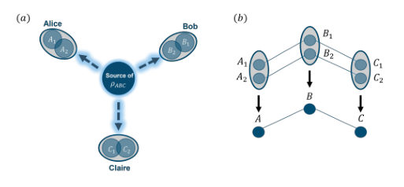
<figcaption class="paper-figure-caption"><b>Fig 1.</b> FIG. 1: Superactivation and compression of genuine mul- tipartite entanglement (GME): (a) Superactivation of GME: The three parties share two copies of a biseparable state ϱABC. If this state is entangled across each bipar- tition, then the two-copy state ϱA1B1C1 ⊗ϱA2B2C2 might be GME with respect to the partition A1A2∣B1B2∣C1C2, leading to GME superactivation. (b) Entanglement com- pression: Each party applies a local projection to a two-copy state, projecting their two-copy system to the single-copy space again. Since local projections can never create entanglement, the two-copy state must be at least as entangled as the resulting state.</figcaption>
</figure>
<figure class="paper-figure-card">
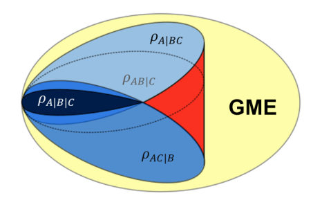
<figcaption class="paper-figure-caption"><b>Fig 2.</b> FIG. 2: Separability structure for tripartite systems: Fully separable states ϱA∣B∣C (dark blue) form a con- vex subset of the intersection of the three convex sets of partition-separable states, ϱAB∣C, ϱAC∣B, and ϱBC∣A (two light-blue regions and background). The convex hull of all partition-separable states forms the set of bisepara- ble states (all blue and red regions). The FIB states lie in the red region. All other fully inseparable states that lie outside the set of biseparable states (yellow) are gen- uinely multipartite entangled.</figcaption>
</figure>
<figure class="paper-figure-card">
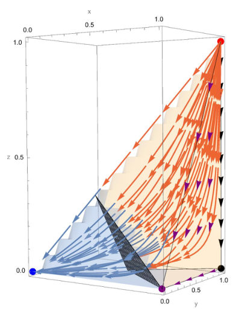
<figcaption class="paper-figure-caption"><b>Fig 3.</b> FIG. 3: Entanglement compression of a large number of copies under the Hadamard map for states χ(1,x,y,z): The red region corresponds to biseparable states, while the blue region depicts genuinely multipartite entangled states. The boundary between these regions is given by the grey plane. The red dot is the repellor and corre- sponds to the fully separable state χ(1,1,1,1), the blue point is the attractor and corresponds to the pure GHZ state χ(1,0,0,0). The purple point is the partition- separable saddle point χ(1,1,0,0), and the black point is the FIB saddle point χ(1,1,1,0). One can see that all the states in the interior of the polytope converge to the pure GHZ state. In contrast, the...</figcaption>
</figure>
<figure class="paper-figure-card">
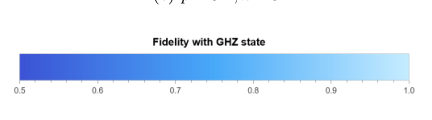
<figcaption class="paper-figure-caption"><b>Fig 4.</b> FIG. 4: Entanglement compression under the Hadamard map for GHZ-diagonal states χ(1,x,y,z) without white noise vs. with white noise: The plots show GME regions (blue) vs. biseparable regions (red) of states (1−p)χ(1,x,y,z)+ p</figcaption>
</figure>
<figure class="paper-figure-card">
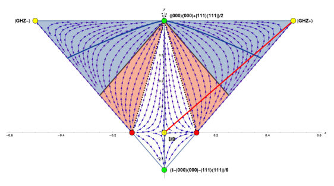
<figcaption class="paper-figure-caption"><b>Fig 5.</b> FIG. 6: Flow of the vector field from Eq. (20). The two green points are attractors corresponding to fully separable states (∣000⟩⟨000∣+ ∣111⟩⟨111∣)/2 and (18 −∣000⟩⟨000∣−∣111⟩⟨111∣)/6, the three yellow points are saddle points, where two of them correspond to pure genuinely multipartite entangled states ∣GHZ+⟩and ∣GHZ−⟩and the third one corresponds to the maxi- mally mixed state 18/8, and the two red points are re- pellors corresponding to the states 1 4 ∣GHZ±⟩⟨GHZ±∣+ 1 8 (18 −∣000⟩⟨000∣−∣111⟩⟨111∣). The red regions corre- spond to FIB states (GME activatable states). The uncoloured region under the FIB states corresponds to fully separable states, and the blue region above the FIB states...</figcaption>
</figure>
</div>

<p><strong>Summary.</strong> This paper analyzes how genuine multipartite entanglement can be 'compressed' by projecting multi-copy states back into a single-copy subspace using a local map like the Hadamard map. It finds that unlike entanglement distillation, this compression process is not indefinitely beneficial, exhibiting an optimal number of copies beyond which the entanglement quality degrades. This highlights a crucial distinction between theoretical purification limits and practical resource processing.</p>
<p><strong>Why it may be interesting.</strong> It provides a concrete, non-asymptotic model for how entanglement resources can be processed or degraded in realistic, noisy quantum information processing tasks, offering insights beyond idealized distillation limits.</p>
<details>
<summary>Detailed structure</summary>
<p><strong>Main problem.</strong> The paper investigates the 'compressibility' of genuine multipartite entanglement (GME) when subjected to local projections across multiple copies, contrasting this process with standard entanglement distillation.</p>
<p><strong>Main result.</strong> For a fixed projection map like the Hadamard map, the quality of the compressed GME decreases beyond an optimal number of copies, unlike ideal distillation protocols.</p>
<p><strong>Method.</strong> The analysis involves studying the evolution of multi-copy states ($
ho^{\otimes k}$) under a local projection map (e.g., the Hadamard map) and analyzing the resulting fixed points and convergence behavior.</p>
<p><strong>Model / system.</strong> The system involves three parties (Alice, Bob, Claire) sharing quantum states, focusing on multi-copy states and analyzing the behavior of GHZ-diagonal states under compression.</p>
<p><strong>Key observables.</strong> Fidelity with pure GHZ states, the degree of entanglement, and the dependence of entanglement quality on the number of copies ($k$).</p>
<p><strong>Important parameters / regimes.</strong> The number of copies ($k$), the noise parameter ($p$), and the specific projection map (Hadamard map).</p>
<p><strong>Assumptions / limitations.</strong> The analysis uses the Hadamard map as an example projection map, and some results rely on the assumption that the state belongs to specific, idealized classes (e.g., GHZ-diagonal states).</p>
<p><strong>Figures summary.</strong> Figures illustrate superactivation and entanglement compression, showing how fidelity changes with the number of copies, and compare ideal theoretical evolution against noisy experimental reconstructions.</p>
<p><strong>Paper structure.</strong> The paper introduces the problem of GME superactivation and compressibility, details the mathematical framework using the Hadamard map on multi-copy states, analyzes the convergence to fixed points, and concludes by comparing this compression mechanism to established entanglement distillation protocols.</p>
</details>
<details>
<summary>Abstract</summary>
<p>One of the most counterintuitive effects in the examination of quantum states is the phenomenon of superactivation, which describes the fact that a quantum state, which is useless for a specific task, may become useful when one considers multiple copies of it. This effect can be observed in the case of genuine multipartite entanglement, where local projections from multiple copies to the single-copy Hilbert space could significantly simplify the practical accessibility of its superactivation. We investigate how such projections behave in the limit of many copies, using the Hadamard map as an example, and studying different state families. We show that, in this scheme, for a fixed map, an optimal number of copies exists, beyond which the obtained entanglement decreases, highlighting the differences between entanglement distillation and local projection schemes.</p>
</details>
<p><sub><a href="#top">↑ back to top</a></sub></p>

<p><a id="paper-2608.19605"></a></p>
<h3 id="exact-partition-function-of-arithmetic-ising-model"><a href="http://arxiv.org/abs/2608.19605v1">Exact partition function of arithmetic Ising model</a></h3>
<p><strong>Authors:</strong> Anu Dhochak, Ken Kikuchi, Shrinit Singh<br>
<strong>Type:</strong> theory · <strong>Category:</strong> statistical mechanics · <strong>PDF:</strong> <a href="https://arxiv.org/pdf/2608.19605v1">https://arxiv.org/pdf/2608.19605v1</a><br>
<strong>Analysis basis:</strong> full PDF text, analyzed in chunks
<strong>Topic relevance:</strong> <code>analog quantum simulation</code> <strong>1/5</strong></p>
<div class="figure-strip-hint">↔ Scroll figures horizontally</div>
<div class="paper-figures-scroll">
<figure class="paper-figure-card">
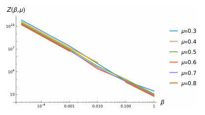
<figcaption class="paper-figure-caption"><b>Fig 1.</b> FIG. 1. Z(β, µ) of 2 × 2 arithmetic Ising model</figcaption>
</figure>
<figure class="paper-figure-card">
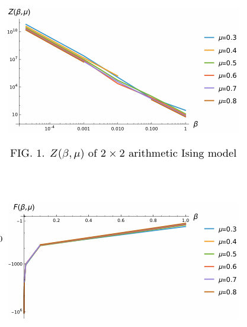
<figcaption class="paper-figure-caption"><b>Fig 2.</b> FIG. 2. F(β, µ) of 2 × 2 arithmetic Ising model</figcaption>
</figure>
<figure class="paper-figure-card">
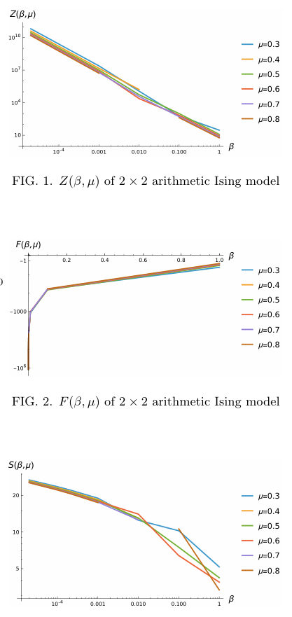
<figcaption class="paper-figure-caption"><b>Fig 3.</b> FIG. 3. S(β, µ) of 2 × 2 arithmetic Ising model</figcaption>
</figure>
</div>

<p><strong>Summary.</strong> This paper provides an exact, compact formula for the partition function of the $d$-dimensional arithmetic Ising model. Using advanced techniques involving formal calculus and zeta functions, the authors calculate the free energy and entropy, demonstrating that the system exhibits entropic order at high temperatures.</p>
<p><strong>Why it may be interesting.</strong> While focused on classical statistical mechanics, the rigorous derivation of exact partition functions for complex lattice models provides powerful mathematical techniques applicable to quantum lattice models where exact solutions are rare.</p>
<details>
<summary>Detailed structure</summary>
<p><strong>Main problem.</strong> The paper aims to derive a compact, exact formula for the partition function, free energy, and entropy of the $d$-dimensional arithmetic Ising model (AIM).</p>
<p><strong>Main result.</strong> An exact formula for the partition function is derived, which for the $2 	imes 2$ case involves the $q$-Hurwitz-Lerch zeta function, and the entropy is shown to increase at high temperatures.</p>
<p><strong>Method.</strong> The calculation uses formal variables and differential operators acting on polynomials, relating the partition function to a sum over configurations, and employing continuity arguments to prove the general formula.</p>
<p><strong>Model / system.</strong> The system is the $d$-dimensional arithmetic Ising model defined on a lattice, characterized by the Hamiltonian $H(\mathbf{n}, U, \mu) = U \sum_{x \sim y} n_x n_y + \mu \sum_x n_x$.</p>
<p><strong>Key observables.</strong> Partition function ($Z$), Free energy ($F$), and Entropy ($S$).</p>
<p><strong>Important parameters / regimes.</strong> Inverse temperature ($eta$), coupling constant ($U$), and chemical potential ($\mu$).</p>
<p><strong>Assumptions / limitations.</strong> The derivation initially assumes the chemical potential $\mu$ is irrational, but the result is extended to all $\mu > 0$ using continuity arguments.</p>
<p><strong>Figures summary.</strong> Figures illustrate the behavior of $Z$, $F$, and $S$ for the $2 	imes 2$ model, showing that entropy increases at high temperatures (small $eta$), supporting entropic order.</p>
<p><strong>Paper structure.</strong> The paper first defines the AIM and the partition function. It then develops a formal method using differential operators to calculate $Z$. The results are presented for the $2 	imes 2$ case using the $q$-Hurwitz-Lerch zeta function, and the general $d$-dimensional result is stated.</p>
</details>
<details>
<summary>Abstract</summary>
<p>We present a compact formula for the exact partition function of the $d$-dimensional arithmetic Ising model (AIM). For a $2\times2$ system, we express it analytically using the $q$-Hurwitz-Lerch zeta function and derive explicit forms for the free energy and entropy. Additionally, we find that the entropy increases at high temperatures, supporting the presence of entropic order.</p>
</details>
<p><sub><a href="#top">↑ back to top</a></sub></p>

<p><a id="paper-2608.19459"></a></p>
<h3 id="is-the-quantum-entangled-universe-a-small-world"><a href="http://arxiv.org/abs/2608.19459v1">Is the Quantum-Entangled Universe a Small World?</a></h3>
<p><strong>Authors:</strong> Gregory S. Duane<br>
<strong>Type:</strong> theory · <strong>Category:</strong> other · <strong>PDF:</strong> <a href="https://arxiv.org/pdf/2608.19459v1">https://arxiv.org/pdf/2608.19459v1</a><br>
<strong>Analysis basis:</strong> full PDF text, analyzed in chunks
<strong>Topic relevance:</strong> <code>analog quantum simulation</code> <strong>1/5</strong></p>
<div class="figure-strip-hint">↔ Scroll figures horizontally</div>
<div class="paper-figures-scroll">
<figure class="paper-figure-card">
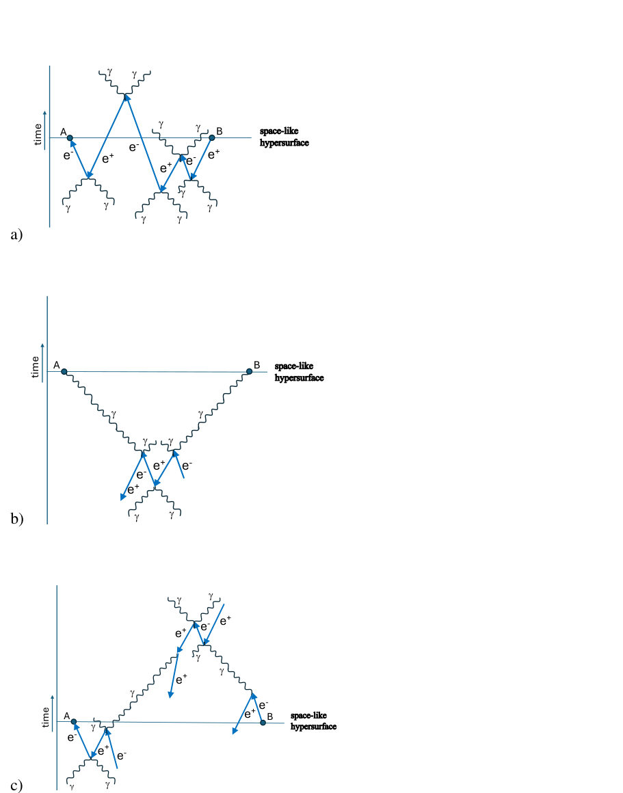
<figcaption class="paper-figure-caption"><b>Fig 1.</b> Fig. 1. Possible connections between partially entangled particles: a) successive pair production and anni-</figcaption>
</figure>
<figure class="paper-figure-card">
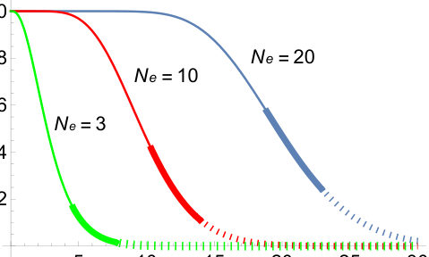
<figcaption class="paper-figure-caption"><b>Fig 2.</b> Fig. 2. Probability of partial entanglement between two particles in a given medium, as defined by maximum</figcaption>
</figure>
<figure class="paper-figure-card">
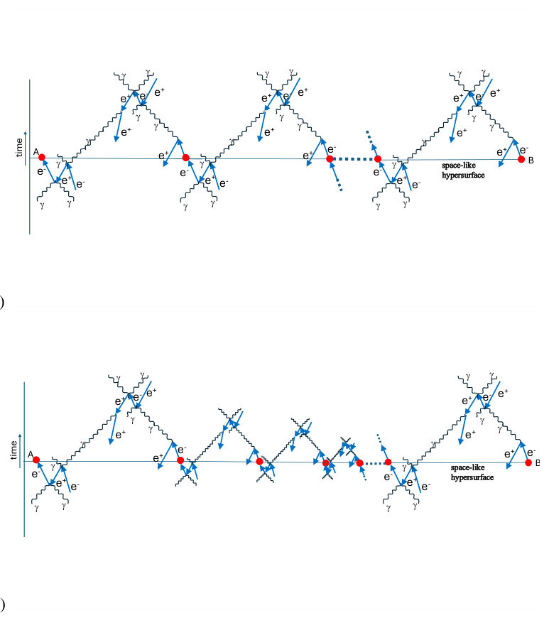
<figcaption class="paper-figure-caption"><b>Fig 3.</b> Fig. 3. a) Chain of links between particles (red dots), on a given space-like hyper-surface, connecting two</figcaption>
</figure>
</div>

<p><strong>Summary.</strong> This theoretical paper explores whether the universe's connectivity, mediated by partial quantum entanglement, forms a small-world network. By analyzing the decay rate of entanglement probability with distance, the authors test network structure against established mathematical criteria. The findings suggest that while entanglement provides some structure, the precise nature (small-world vs. random) depends critically on the underlying physical decay laws.</p>
<p><strong>Why it may be interesting.</strong> It applies abstract network theory concepts (small-world, random graphs) to fundamental physics questions about the large-scale structure of spacetime and quantum connectivity, bridging quantum field theory concepts with graph theory.</p>
<details>
<summary>Detailed structure</summary>
<p><strong>Main problem.</strong> The paper investigates whether the universe, when modeled as a network connected by partial quantum entanglement, exhibits the characteristic 'small-world' structure.</p>
<p><strong>Main result.</strong> The entanglement probability decays exponentially, failing the strict power-law test for small-worldness, though the structure is suggested on large scales. The network structure depends critically on the decay exponent $r$ relative to the dimensionality $k$.</p>
<p><strong>Method.</strong> The analysis uses network theory diagnostics (clustering, diameter scaling) applied to entanglement probabilities derived from particle path lengths and interaction counts.</p>
<p><strong>Model / system.</strong> The model is a network of particles on a space-like hyper-surface, where connections are established by partial quantum entanglement mediated by a maximum number of interactions ($N_e$). The structure is analyzed across cosmic scales.</p>
<p><strong>Key observables.</strong> Small-world diameter scaling (logarithmic vs. power-law), entanglement probability $P(n \le N_e | l)$, and network connectivity parameters ($r, k$).</p>
<p><strong>Important parameters / regimes.</strong> Maximum number of interactions ($N_e$), mean free path ($\lambda$), distance ($l$), and the decay exponent ($r$) governing link probability.</p>
<p><strong>Assumptions / limitations.</strong> The analysis assumes uniform background initially, approximates lattice distance as physical distance at large scales, and relies on comparing network scaling laws derived from entanglement decay.</p>
<p><strong>Figures summary.</strong> Figures illustrate possible entanglement connections via varying numbers of interactions ($n$) and show the probability of partial entanglement versus distance for different $N_e$ values.</p>
<p><strong>Paper structure.</strong> The paper progresses by defining the entanglement link probability, comparing this to the mathematical requirements for small-world networks, and then generalizing the analysis using network theory parameters ($r$ and $k$) to distinguish between random, small-world, and large-world topologies.</p>
</details>
<details>
<summary>Abstract</summary>
<p>Partial entanglement may provide enough connections in the universe to satisfy the definition of a small world. To investigate this possibility, we define a network of particles on a given space-like hyper-surface with a long-range link between any two particles that are connected by a chain of exchanged particles involving less than some small maximum number of interactions. Considering the mean free paths of particles in different regions of space and the resulting probability distributions of entanglement connections vs. distance, we find evidence of small-world or random network structure on all but the smallest scales - corresponding to stars and planets - on which other types of connections would need to be added to complete the small world picture.</p>
</details>
<p><sub><a href="#top">↑ back to top</a></sub></p>

<p><a id="paper-2608.20247"></a></p>
<h3 id="jamming-extensions-of-quantum-correlations-lead-to-hidden-superluminal-signaling"><a href="http://arxiv.org/abs/2608.20247v1">Jamming Extensions of Quantum Correlations Lead to Hidden Superluminal Signaling</a></h3>
<p><strong>Authors:</strong> Ravishankar Ramanathan, Xie Sicheng, Michał Eckstein, Paweł Horodecki<br>
<strong>Type:</strong> theory · <strong>Category:</strong> other · <strong>PDF:</strong> <a href="https://arxiv.org/pdf/2608.20247v1">https://arxiv.org/pdf/2608.20247v1</a><br>
<strong>Analysis basis:</strong> full PDF text, analyzed in chunks
<strong>Topic relevance:</strong> <code>quantum measurements</code> <strong>1/5</strong></p>
<div class="figure-strip-hint">↔ Scroll figures horizontally</div>
<div class="paper-figures-scroll">
<figure class="paper-figure-card">

<figcaption class="paper-figure-caption"><b>Fig 1.</b> FIG. 1. The Jamming spacetime configuration for three spacelike separated players at locations A(tA, rA), B(tB, rB) and C(tC, rC). In this configuration, the intersection of the future light cones of A and C, denoted J+(A) ∩J+(C) is entirely contained within the future light cone of B denoted J+(B).</figcaption>
</figure>
<figure class="paper-figure-card">
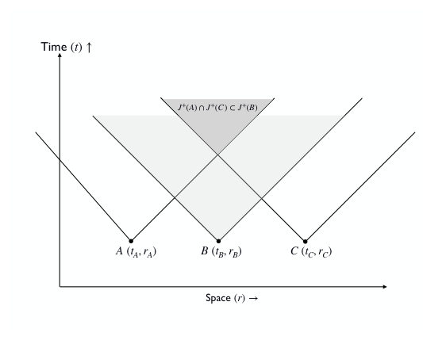
<figcaption class="paper-figure-caption"><b>Fig 2.</b> Fig. 1, where the intersection of the future light-cones of Alice’s and Charlie’s output events lies inside the fu- ture light-cone of Bob’s input event, relativistic causal- ity permits the joint correlations of Alice and Charlie to depend on Bob’s input, provided their single-party marginals remain independent of that input. While de- tailed derivations and explanations can be found in [3– 5, 34], intuitively the reason is clear. The joint correla- tions of Alice and Charlie’s outcomes are only accessi- ble at a spacetime point in the intersection of their fu- ture light-cones. As such, any superluminal causal in- fluence that jams their correlations still does not lead to superluminal...</figcaption>
</figure>
</div>

<p><strong>Summary.</strong> This theoretical paper analyzes the constraints imposed on quantum correlations by relativistic causality (RC) compared to the standard no-signaling principle. The authors prove that any attempt to introduce 'jamming'—a superluminal causal influence—into quantum correlations necessarily results in detectable superluminal signaling. This has direct implications for cryptography, showing that security protocols must account for spacetime location constraints.</p>
<p><strong>Why it may be interesting.</strong> This work provides fundamental constraints on quantum correlations imposed by spacetime structure, which is crucial for understanding the limits of quantum information transfer in relativistic settings.</p>
<details>
<summary>Detailed structure</summary>
<p><strong>Main problem.</strong> The paper investigates whether quantum correlations can exploit the 'causal loophole' left open by relativistic causality (RC) compared to the standard no-signaling principle, specifically by analyzing the concept of 'jamming.'</p>
<p><strong>Main result.</strong> The authors prove that any nontrivial jamming extension of quantum correlations, whether state-independent or state-dependent, necessarily leads to hidden superluminal signaling, thus constraining physically consistent correlations.</p>
<p><strong>Method.</strong> The analysis involves extending the operator framework used for characterizing correlations to incorporate RC constraints, utilizing mathematical proofs based on the requirement that the underlying state must be a valid density operator.</p>
<p><strong>Model / system.</strong> The study models multipartite Bell experiments involving three spacelike separated players (Alice, Bob, Charlie) and characterizes joint probability distributions $P(a, b, c|x, y, z)$ under the constraints of No-Signaling (NS) and Relativistic Causality (RC).</p>
<p><strong>Key observables.</strong> Joint probability distributions $P(a, b, c|x, y, z)$, security success probabilities (e.g., $p_{RC,0} + p_{RC,1}$), and the violation of established inequalities like the Svetlichny inequality.</p>
<p><strong>Important parameters / regimes.</strong> The analysis focuses on the three-player scenario and the specific structure of 'jamming spacetime configurations.'</p>
<p><strong>Assumptions / limitations.</strong> The core argument relies on the mathematical structure of the operator representation and the physical constraint that the state must be a valid density operator ($\Omega \ge 0$).</p>
<p><strong>Figures summary.</strong> Figure 1 illustrates a 'Jamming spacetime configuration' for three spacelike separated players, showing the containment of the intersection of two future light cones within the third.</p>
<p><strong>Paper structure.</strong> The paper first characterizes the RC set by extending the operator framework, proving that quantum requirements eliminate jamming. It then applies this characterization to break security guarantees of DI cryptographic primitives, showing that security requires specifying measurement locations, not just input-output statistics.</p>
</details>
<details>
<summary>Abstract</summary>
<p>Relativistic causality in certain spacetime configurations permits jamming - superluminal causal influences that nevertheless do not enable superluminal signaling. We fully characterize the correlations compatible with relativistic causality (RC) by extending the operator framework of PRL 104, 140404. When the underlying state is required to be quantum, we prove that any nontrivial jamming - whether state-independent or state-dependent - necessarily leads to hidden superluminal signaling. Thus, the only consistent possibilities are standard quantum correlations without jamming or the full relativistically causal correlation set, with intermediate jamming extensions of quantum correlations leading to signaling. As an application of our characterization, we investigate the security of device-independent (DI) cryptographic primitives against adversaries constrained only by relativistic causality. We construct explicit RC attacks that break DI bit commitment and DI secret sharing in jamming geometries, even when these protocols remain secure against no-signaling adversaries. Our results show that security against relativistic adversaries requires behaviors to be specified together with the spacetime locations of their measurement events; input-output statistics alone are insufficient.</p>
</details>
<p><sub><a href="#top">↑ back to top</a></sub></p>

<p><a id="paper-2608.19373"></a></p>
<h3 id="krylov-complexity-and-the-growth-of-the-black-hole-interior-in-3d-gravity"><a href="http://arxiv.org/abs/2608.19373v1">Krylov complexity and the growth of the black hole interior in 3D gravity</a></h3>
<p><strong>Authors:</strong> Arpan Bhattacharyya, Sounak Pal, Juan F. Pedraza<br>
<strong>Type:</strong> theory · <strong>Category:</strong> other · <strong>PDF:</strong> <a href="https://arxiv.org/pdf/2608.19373v1">https://arxiv.org/pdf/2608.19373v1</a><br>
<strong>Analysis basis:</strong> full PDF text, analyzed in chunks
<strong>Topic relevance:</strong> <code>Keldysh / 2PI / non-Gaussian methods</code> <strong>1/5</strong></p>
<div class="figure-strip-hint">↔ Scroll figures horizontally</div>
<div class="paper-figures-scroll">
<figure class="paper-figure-card">
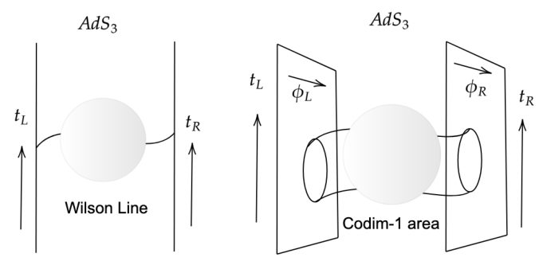
<figcaption class="paper-figure-caption"><b>Fig 1.</b> Figure 1: Schematic representation of the boundary and bulk constructions. On the left, a Wilson line connecting boundary insertions probes a codimension-two bulk object in AdS3. On the right, we extend this construction by smearing the boundary operators along the periodically identified spatial direction ϕ. The resulting non-local operators provide the boundary observable used to probe the growth of the codimension-one surface extending through the black hole interior.</figcaption>
</figure>
<figure class="paper-figure-card">
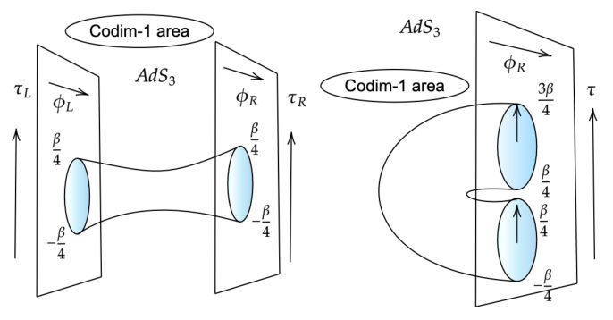
<figcaption class="paper-figure-caption"><b>Fig 2.</b> Figure 2: Integration regions for the Euclidean time coordinate τ associated with the extended codimension-one area in AdS3. The left panel corresponds to the two-sided correlator, while the right panel shows the corresponding single-boundary correlator.</figcaption>
</figure>
<figure class="paper-figure-card">
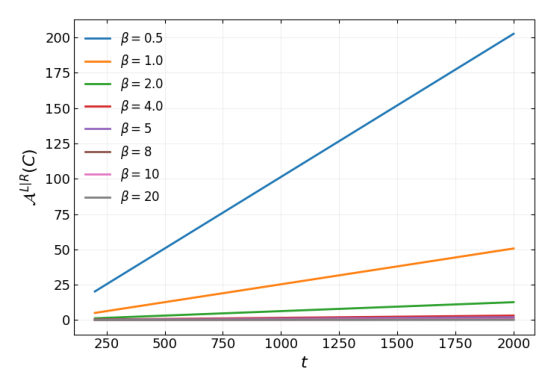
<figcaption class="paper-figure-caption"><b>Fig 3.</b> Figure 3: Late-time growth of the codimension-one observable AL|R(C), showing the asymptotically linear regime.</figcaption>
</figure>
<figure class="paper-figure-card">
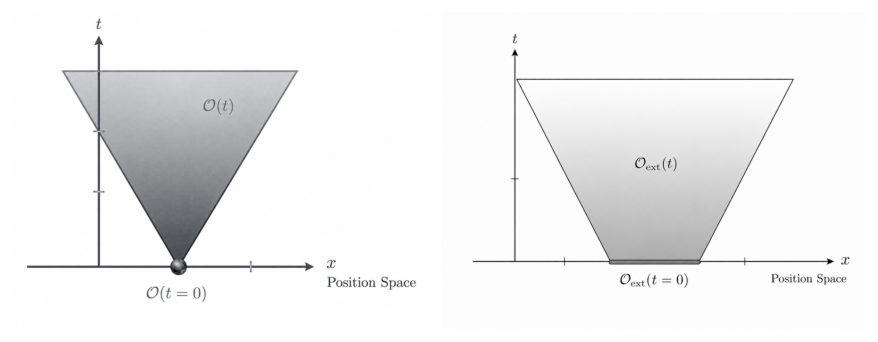
<figcaption class="paper-figure-caption"><b>Fig 4.</b> Figure 4: Schematic illustration of operator spreading for an initially local operator (left) and an extended non-local operator (right). A local operator is initially spatially localized, whereas the extended operator already has nontrivial spatial support at t = 0. This distinction concerns the spatial structure of the seed operator in configuration space; in the Krylov representation, either operator defines a single initial basis element O0, and their subsequent dynamics is encoded in the corresponding Lanczos data.</figcaption>
</figure>
<figure class="paper-figure-card">
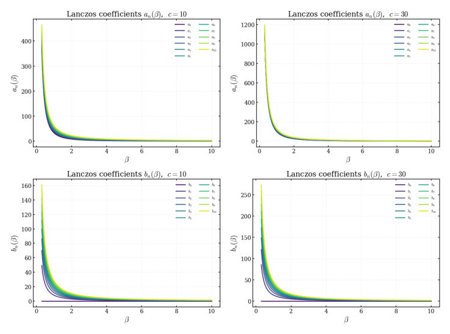
<figcaption class="paper-figure-caption"><b>Fig 5.</b> Figure 5: Dependence of the Lanczos coefficients an and bn on the inverse temperature β. The left column corresponds to c = 10, and the right column to c = 30.</figcaption>
</figure>
</div>

<p><strong>Summary.</strong> This theoretical paper studies black hole interior growth in 3D gravity using the AdS/CFT correspondence. By comparing two complexity measures, the authors find that operator Krylov complexity correctly captures the expected linear growth of the black hole interior volume. This result establishes a novel diagnostic tool, suggesting that operator complexity is the appropriate measure for encoding bulk geometric growth in this holographic setting.</p>
<p><strong>Why it may be interesting.</strong> The work extends the use of complexity measures beyond standard quantum information diagnostics, applying them to fundamental gravitational physics (black hole interiors) and providing a concrete, testable distinction between operator and state complexity in this context.</p>
<details>
<summary>Detailed structure</summary>
<p><strong>Main problem.</strong> The paper investigates the growth of the black hole interior in three-dimensional gravity and determines whether this geometric growth is captured by the operator Krylov complexity measure.</p>
<p><strong>Main result.</strong> Operator Krylov complexity successfully reproduces the characteristic late-time linear growth of the black hole interior, while the state-based Krylov spread complexity does not, highlighting a distinction between the two complexity notions.</p>
<p><strong>Method.</strong> The authors use the AdS/CFT correspondence, employing the Chern-Simons formulation of 3D gravity to relate boundary correlation functions of smeared operators to bulk Wilson lines, and then apply Krylov methods to analyze the resulting dynamics.</p>
<p><strong>Model / system.</strong> The physical system is the two-sided BTZ black hole in three-dimensional gravity, analyzed via its dual description using the Thermofield Double (TFD) state in AdS$_3$. The analysis compares two complexity measures: operator Krylov complexity and Krylov spread complexity.</p>
<p><strong>Key observables.</strong> Operator Krylov complexity, Krylov spread complexity, codimension-one surface volume, and the effective representation parameter $\kappa_{	ext{eff}}(t)$.</p>
<p><strong>Important parameters / regimes.</strong> The late-time linear growth regime of the black hole interior volume, and the semiclassical approximation regime for the partition function.</p>
<p><strong>Assumptions / limitations.</strong> The analysis relies on the semiclassical approximation and focuses on the linear growth regime, not the eventual non-perturbative saturation of the interior volume.</p>
<p><strong>Figures summary.</strong> Figure 1 schematically compares probing a codimension-two object via a Wilson line versus extending this to probe a codimension-one surface using smeared operators. Figure 2 illustrates the integration regions for the Euclidean time coordinate associated with the codimension-one area.</p>
<p><strong>Paper structure.</strong> The paper first establishes the boundary reconstruction of the black hole interior growth using correlation functions. It then calculates and compares the growth rates derived from operator Krylov complexity versus Krylov spread complexity, concluding with a discussion on the implications for complexity measures in AdS$_3$.</p>
</details>
<details>
<summary>Abstract</summary>
<p>We investigate the growth of the black hole interior in three-dimensional gravity from the boundary theory. For the two-sided BTZ black hole, we propose a boundary reconstruction of the time dependence of a codimension-one surface in terms of correlation functions of smeared operators in the thermofield double state, reproducing the characteristic late-time linear growth predicted by the complexity-volume proposal. Using the Chern--Simons formulation of three-dimensional gravity, these nonlocal correlators are represented by bulk Wilson lines with smeared endpoints, extending the familiar connection between Wilson lines and codimension-two observables underlying holographic entanglement entropy to codimension-one observables. We then ask whether the same geometric growth is captured by Krylov complexity. For the smeared operators, we extract the Lanczos data from their correlation functions and find that operator Krylov complexity reproduces the late-time linear growth of the black hole interior, extending previous connections between operator growth and bulk geometry to AdS$_3$. By contrast, the Krylov spread complexity of the thermofield double state, obtained from the semiclassical gravitational partition function, does not exhibit the linear growth of the bulk volume within the regime accessible to our analysis. Our results therefore point to a distinguished role for operator Krylov complexity in encoding black hole interior growth beyond two-dimensional gravity, while highlighting a qualitative distinction between operator and state notions of Krylov complexity.</p>
</details>
<p><sub><a href="#top">↑ back to top</a></sub></p>

<p><a id="paper-2608.19508"></a></p>
<h3 id="quantum-algorithm-for-differential-equations-via-permutation-matrix-representation-with-application-to-the-burgers-equation"><a href="http://arxiv.org/abs/2608.19508v1">Quantum algorithm for differential equations via permutation matrix representation with application to the Burgers equation</a></h3>
<p><strong>Authors:</strong> Hriday Sabharwal, Amir Kalev, Itay Hen<br>
<strong>Type:</strong> theory · <strong>Category:</strong> quantum information and computing · <strong>PDF:</strong> <a href="https://arxiv.org/pdf/2608.19508v1">https://arxiv.org/pdf/2608.19508v1</a><br>
<strong>Analysis basis:</strong> full PDF text, analyzed in chunks
<strong>Topic relevance:</strong> <code>analog quantum simulation</code> <strong>1/5</strong></p>
<div class="figure-strip-hint">↔ Scroll figures horizontally</div>
<div class="paper-figures-scroll">
<figure class="paper-figure-card">
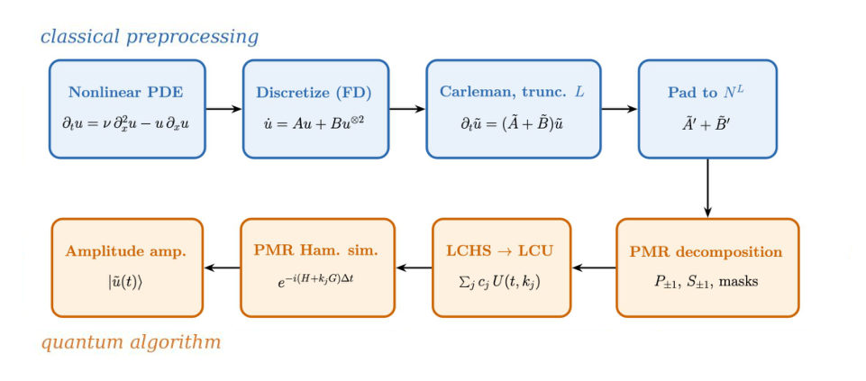
<figcaption class="paper-figure-caption"><b>Fig 1.</b> Figure 1. Overview of the LCHS–PMR construction for a nonlinear fluid equation. In the classical preprocessing stage, the PDE is discretized in space, lifted to a finite linear system by Carleman linearization truncated at level L, and padded to a power-of-two block dimension N L. The quantum algorithm then decomposes the padded generator ˜A′+ ˜B′</figcaption>
</figure>
<figure class="paper-figure-card">
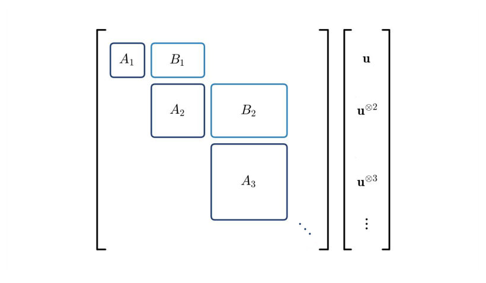
<figcaption class="paper-figure-caption"><b>Fig 2.</b> Figure 2. Structure of the matrix ( ˜A + ˜B) in the extended space (left) acting on the solution vector (right). The diagonal blocks Ak implement the linear part of the dynamics within the u⊗k sector, while the off-diagonal blocks Bk couple u⊗k to u⊗(k+1).</figcaption>
</figure>
<figure class="paper-figure-card">
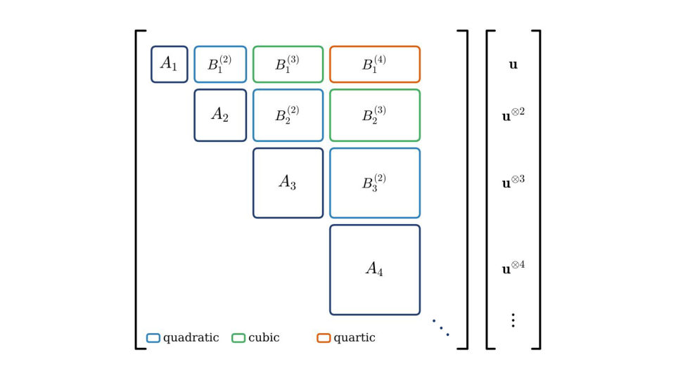
<figcaption class="paper-figure-caption"><b>Fig 3.</b> Figure 3. Structure of the matrix ( ˜A + ˜B) for general higher order nonlinearities. The diagonal blocks Ak implement the linear part of the dynamics within the u⊗k sector, while the off-diagonal blocks B(l) k couple u⊗k to u⊗(k+l−1). The quadratic coupling blocks Bk of Fig. 2 are the degree-two special case B(2) k .</figcaption>
</figure>
</div>

<p><strong>Summary.</strong> This paper presents a quantum algorithm to simulate the dynamics of the viscous Burgers equation by first linearizing the nonlinear PDE using Carleman linearization. It implements the simulation using the Permutation Matrix Representation (PMR) within the LCHS framework. The key contribution is showing that the algorithm scales favorably with the off-diagonal norm of the generator, offering a powerful primitive for simulating general fluid equations on quantum hardware.</p>
<p><strong>Why it may be interesting.</strong> This work provides a concrete, advanced quantum algorithm for simulating complex, nonlinear PDEs, which is a major goal in quantum simulation for condensed matter and fluid dynamics.</p>
<details>
<summary>Detailed structure</summary>
<p><strong>Main problem.</strong> Developing a quantum algorithm to simulate the time evolution of the nonlinear viscous Burgers equation.</p>
<p><strong>Main result.</strong> The authors propose a quantum algorithm utilizing the Permutation Matrix Representation (PMR) within the Linear Combination of Hamiltonian Simulations (LCHS) framework, achieving a scaling advantage based on the off-diagonal norm of the generator.</p>
<p><strong>Method.</strong> The nonlinear PDE is linearized via Carleman linearization, padded for qubit implementation, and the resulting generator is decomposed using PMR to facilitate simulation via LCHS.</p>
<p><strong>Model / system.</strong> The system modeled is the viscous Burgers equation, which is first spatially discretized and then linearized into a high-dimensional, time-dependent linear evolution equation suitable for quantum simulation.</p>
<p><strong>Key observables.</strong> The quantum state $|	ilde{u}
angle$ proportional to the solution of the truncated lifted system; the off-diagonal norm of the Carleman generator.</p>
<p><strong>Important parameters / regimes.</strong> Dimensionless viscosity ($\nu$), characteristic velocity ($U_*$), domain size ($\zeta$), and time step ($\Delta t$).</p>
<p><strong>Assumptions / limitations.</strong> The LCHS algorithm requires the Hermitian part of the linear generator to be positive semidefinite, necessitating an exponential postselection overhead mitigated by a rescaling scheme.</p>
<p><strong>Figures summary.</strong> Figure 1 provides an overview of the LCHS–PMR construction, detailing the path from the PDE to the quantum simulation circuit.</p>
<p><strong>Paper structure.</strong> The paper reviews LCHS and PMR, details the Burgers' equation algorithm, analyzes resource costs, extends the PMR scheme to general fluid equations, and concludes.</p>
</details>
<details>
<summary>Abstract</summary>
<p>We develop a quantum algorithm for solving the dynamics of the nonlinear viscous Burgers equation. We apply the Carleman linearization procedure on the spatially discretized equation, followed by a padding scheme that allows implementation on qubit registers. Existing Carleman-based quantum algorithms commonly formulate the lifted linear differential equation in an oracle model. Here we decompose the padded generator into diagonal masks and reversible arithmetic permutations using the Permutation Matrix Representation (PMR), which we show to be naturally compatible with the Linear Combination of Hamiltonian Simulations (LCHS) algorithm. Under the assumptions required by LCHS - most importantly positive semidefiniteness of the Hermitian part of the linear generator, possibly after a stabilizing shift - the algorithm prepares a normalized quantum state proportional to the solution of the truncated lifted system; the stabilizing shift introduces an exponential postselection overhead, which we quantify and mitigate through a rescaling scheme. We show that our algorithm scales with the off-diagonal norm of the Carleman generator instead of the matrix norm, which can be advantageous for other generators that are diagonally dominant. We also extend the PMR scheme to general fluid equations that may contain higher-order derivatives or nonlinear terms, or may involve multiple fluid variables or spatial dimensions. The construction illustrates how PMR can serve as a convenient Hamiltonian-simulation primitive for a broader class of LCU-based algorithms.</p>
</details>
<p><sub><a href="#top">↑ back to top</a></sub></p>

<p><a id="paper-2608.19868"></a></p>
<h3 id="resource-efficient-bio-molecular-docking-on-a-nisq-era-digital-quantum-computer"><a href="http://arxiv.org/abs/2608.19868v1">Resource-Efficient Bio-Molecular Docking on a NISQ-era Digital Quantum Computer</a></h3>
<p><strong>Authors:</strong> Tianqi Chen, Adrian M. Mak, Jianguo Li, Jian Feng Kong, Chandra Verma, Sebastian Maurer-Stroh<br>
<strong>Type:</strong> both · <strong>Category:</strong> quantum information and computing · <strong>PDF:</strong> <a href="https://arxiv.org/pdf/2608.19868v1">https://arxiv.org/pdf/2608.19868v1</a><br>
<strong>Analysis basis:</strong> full PDF text, analyzed in chunks
<strong>Topic relevance:</strong> <code>QC/QI experiment</code> <strong>1/5</strong></p>
<div class="figure-strip-hint">↔ Scroll figures horizontally</div>
<div class="paper-figures-scroll">
<figure class="paper-figure-card">
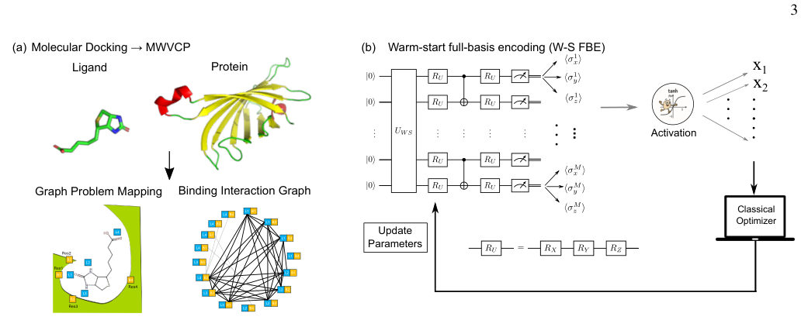
<figcaption class="paper-figure-caption"><b>Fig 1.</b> FIG. 1. Illustration of the problem formalism and multi-basis encoding approach: (a) The molecular docking of ligand and protein is mapped to finding a maximum vertex-weighted clique on a graph: selected pharmacophores from both ligand (blue) and protein (orange) are analyzed and mapped to a labeled distance graph (LDG), following the procedure and criteria introduced in Ref. [24]. The binding interaction graph (BIG) is then defined based on the LDG, with its vertices representing the product of the selected pharmacophores from ligand and protein. Here, we used 1stp as an example for illustration. (b) Full-basis encoding (FBE) with an initial warm-start layer UWS : for each qubit from a...</figcaption>
</figure>
<figure class="paper-figure-card">
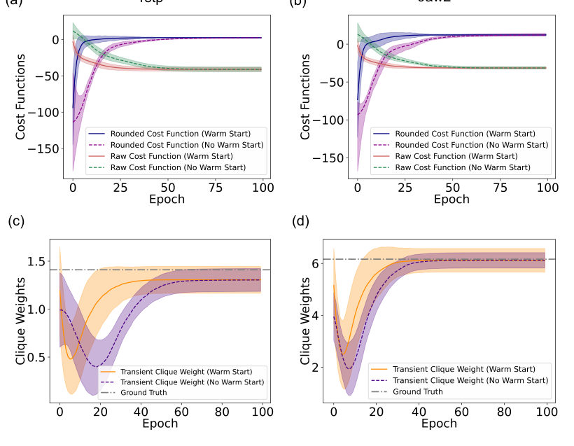
<figcaption class="paper-figure-caption"><b>Fig 2.</b> FIG. 2. Different loss functions values as a function of training epoch used for checking the convergence of N = 18 (1stp) in (a) and (c), and N = 14 (9aw2) in (b) and (d). In panel (a) and (b), the raw cost function (red dashed line) is computed by taking the hyperbolic tangent of each of these observables, i.e., tanh ⟨σi µ⟩(µ = x, y, z) where i = 1, 2, · · · , N and insert each for the original variable of the MVWCP cost function, while the rounded cost function (blue solid line) is computed by taking the sign of each tanh ⟨σi µ⟩(µ = x, y, z), and substitute it back to the original MVWCP cost function. In panel (c) and (d), the transient clique weight is calculated for those chosen vertex...</figcaption>
</figure>
<figure class="paper-figure-card">
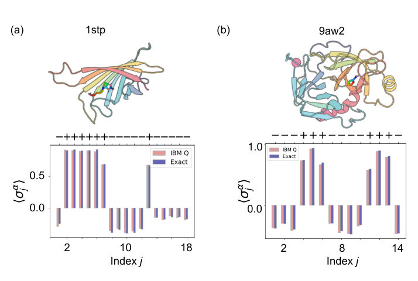
<figcaption class="paper-figure-caption"><b>Fig 3.</b> FIG. 3. IBM quantum computer demonstration of MVWCP results using full-basis encoding for (a) (PDB ID: 1stp) (N = 18) and (b) (PDB ID: 9aw2). The upper part for each panel is a visualization of the 3D structure of protein-ligand complex, and the lower part of each panel is the solution of the MVWCP problem obtained from the real IBM hardware. The plus (minus) sign indicate that at the j-th vertex of the graph is chosen, and our hardware demonstrations are consistent with both the exact results from classical simulations, as well as the ground truth in Fig. 7. The real device results are obtained on a Heron R2 QPU ibm kingston. Other parameters used are: the number of circuit ansatz is fixed...</figcaption>
</figure>
<figure class="paper-figure-card">
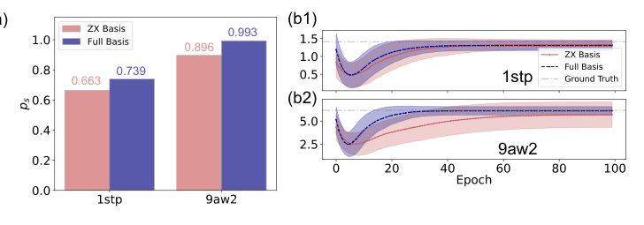
<figcaption class="paper-figure-caption"><b>Fig 4.</b> FIG. 4. (a) Comparison of successful ratios between ZX basis (red) and full basis encodings (blue) for both 1stp (N = 18) and 9aw2 (N = 14). For each approach, it is executed for a total of 1000 repetitions, and the successful ratio ps is calculated. The transient clique weight for both approaches are also shown in (b1) for 1stp and (b2) for 9aw2. In both panels, the horizontal dot-dashed grey line represents the ground truth, and the shaded area stands for the standard error. For both cases, the circuit ansatz consists of three layers, while the penalty value is fixed at 4.</figcaption>
</figure>
<figure class="paper-figure-card">
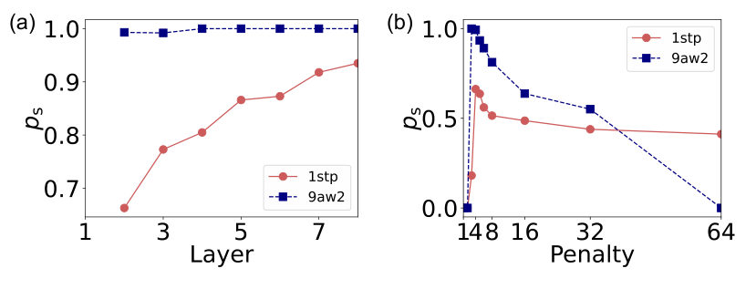
<figcaption class="paper-figure-caption"><b>Fig 5.</b> FIG. 5. Effect of number of (a) the variational quantum circuit layers and (b) the penalty value for 1stp (N = 18, red) and 9aw2, red (N = 14) on the successful ratio ps. For both panels, it is executed for a total of 1000 repetitions, and the successful ratio ps is calculated.</figcaption>
</figure>
</div>

<p><strong>Summary.</strong> This work tackles the computationally hard problem of molecular docking by reformulating it as a Maximum Vertex-Weighted Clique Problem. They introduce a hybrid quantum-classical solver utilizing a Full-Basis Encoding (FBE) strategy optimized via a warm-start procedure. The research demonstrates that FBE is a resource-efficient and rapidly converging quantum encoding for this complex optimization task on NISQ hardware.</p>
<p><strong>Why it may be interesting.</strong> The rigorous mathematical proof that the global minimum is a product state provides a strong theoretical foundation for using variational quantum circuits in complex optimization tasks, which is highly relevant for quantum algorithm design.</p>
<details>
<summary>Detailed structure</summary>
<p><strong>Main problem.</strong> The paper addresses the computationally intensive molecular docking problem, which is mapped to finding a Maximum Vertex-Weighted Clique Problem (MVWCP).</p>
<p><strong>Main result.</strong> They propose and demonstrate a resource-efficient hybrid quantum-classical approach using Full-Basis Encoding (FBE) that shows advantages in convergence speed over other quantum encodings.</p>
<p><strong>Method.</strong> The method involves mapping the problem to a cost Hamiltonian, minimizing it using a variational quantum circuit optimized via a warm-start procedure inspired by imaginary time evolution.</p>
<p><strong>Model / system.</strong> The system is molecular docking, modeled via a compatibility graph and recast as an MVWCP. The quantum computation is performed on a NISQ-era digital quantum computer (IBM quantum processor).</p>
<p><strong>Key observables.</strong> Transient clique weight, raw/rounded cost functions, and single-qubit expectation values ($\langle\sigma_x
angle, \langle\sigma_y
angle, \langle\sigma_z
angle$).</p>
<p><strong>Important parameters / regimes.</strong> NISQ regime constraints, qubit connectivity, and the number of variables ($N$) in the graph problem.</p>
<p><strong>Assumptions / limitations.</strong> The global minimum of the FBE objective can be chosen to be a pure product state, justifying the use of a unitary variational circuit.</p>
<p><strong>Figures summary.</strong> Figure 1 illustrates the mapping to MVWCP and the FBE strategy. Figure 7 shows MVWCP graphs for docking instances. Figure 8 compares optimization dynamics using FBE versus ZX-basis encoding.</p>
<p><strong>Paper structure.</strong> The paper first establishes the problem mapping (MVWCP) and the need for quantum assistance. It then details the FBE encoding and the warm-start optimization procedure. A key theoretical section proves the product state nature of the minimum, followed by comparative results showing FBE's superior convergence.</p>
</details>
<details>
<summary>Abstract</summary>
<p>Molecular docking is a vital computational task in drug discovery, wherein the objective is to efficiently identify optimal binding poses between a ligand and a target receptor protein. Due to the combinatorial explosion of possible binding configurations, docking of large and flexible molecules remains a computationally intensive problem, especially at scale. Early studies have revealed that the molecular docking can be re-cast as a maximum vertex-weighted clique problem (MVWCP) problem on a compatibility graph to be solved classically. In this work, we proposed a hybrid quantum-classical approach for molecular docking leveraging the MVWCP formalism with a variational full-basis encoding (FBE) strategy, which enables efficient encoding of classical binary variables with Bloch sphere vectors. We further prove that a global minimizer of the FBE objective can always be chosen to be a pure product state, thereby providing a rigorous justification for its optimization using a unitary variational circuit. The molecular docking problem is first mapped to a cost Hamiltonian that is minimized within a variational framework, optimized via a randomized imaginary time evolution (ITE)-inspired warm start, and gradient-based techniques. Finally, we also executed the circuit on an IBM quantum computer, underlying the feasibility and of quantum-assisted optimization for structure-based drug design and point towards the broader utility of advanced encoding techniques in quantum optimization for computational biology.</p>
</details>
<p><sub><a href="#top">↑ back to top</a></sub></p>

<p><a id="paper-2608.20209"></a></p>
<h3 id="rigorous-existence-and-location-of-quantum-phase-transitions-in-lattice-hamiltonian-systems"><a href="http://arxiv.org/abs/2608.20209v1">Rigorous existence and location of quantum phase transitions in lattice Hamiltonian systems</a></h3>
<p><strong>Authors:</strong> Massimo Ostilli, Carlo Presilla<br>
<strong>Type:</strong> theory · <strong>Category:</strong> statistical mechanics · <strong>PDF:</strong> <a href="https://arxiv.org/pdf/2608.20209v1">https://arxiv.org/pdf/2608.20209v1</a><br>
<strong>Analysis basis:</strong> full PDF text, analyzed in chunks
<strong>Topic relevance:</strong> <code>analog quantum simulation</code> <strong>1/5</strong></p>
<div class="figure-strip-hint">↔ Scroll figures horizontally</div>
<div class="paper-figures-scroll">
<figure class="paper-figure-card">
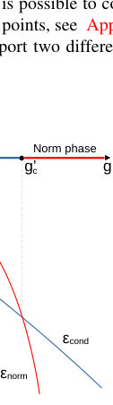
<figcaption class="paper-figure-caption"><b>Fig 1.</b> Figure 3. Sketch scenario of Theorem 3 with two first-order QPTs taking place at the critical points gc and g′ c.</figcaption>
</figure>
<figure class="paper-figure-card">
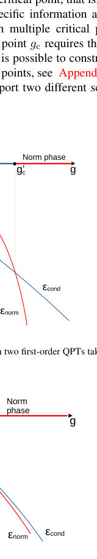
<figcaption class="paper-figure-caption"><b>Fig 2.</b> Figure 4. Sketch scenario of Theorem 3 with a first-order QPT and a second-order QPT taking place at the critical points gc and g′ c, respectively.</figcaption>
</figure>
</div>

<p><strong>Summary.</strong> This paper develops a rigorous mathematical framework to prove the existence and locate Quantum Phase Transitions (QPTs) in lattice Hamiltonians. It achieves this by interpreting the transition as a condensation in state space, analyzing the ground-state energy in the thermodynamic limit. The work generalizes previous results, confirming applicability to second-order transitions and providing general bounds for the critical point.</p>
<p><strong>Why it may be interesting.</strong> The rigorous mathematical framework connecting QPTs to state-space condensation provides a powerful, general diagnostic tool for identifying and locating phase transitions in complex quantum many-body systems.</p>
<details>
<summary>Detailed structure</summary>
<p><strong>Main problem.</strong> To rigorously prove the existence and determine the location of Quantum Phase Transitions (QPTs) in general one-parameter lattice Hamiltonian systems.</p>
<p><strong>Main result.</strong> The analysis establishes that any QPT in lattice systems can be interpreted as a condensation in state space, and provides methods to rigorously bound the critical point $g_c$. The theory also demonstrates the possibility of multiple second-order crossings.</p>
<p><strong>Method.</strong> The approach involves decomposing the Hilbert space into two orthogonal subspaces and analyzing the ground-state energy per particle in the Thermodynamic Limit. The critical point is found where the energies from these two subspaces become equal.</p>
<p><strong>Model / system.</strong> The study focuses on lattice Hamiltonian systems described by $H = K + gV$, where $K$ and $V$ are non-commuting operators and $g$ is the tuning parameter. The analysis is general, applying to various lattice models.</p>
<p><strong>Key observables.</strong> The primary observables are the ground-state energies per particle, $\epsilon_{	ext{cond}}(g)$ and $\epsilon_{	ext{norm}}(g)$, whose crossing determines the critical point $g_c$.</p>
<p><strong>Important parameters / regimes.</strong> The coupling parameter $g$, the critical point $g_c$, and the parameters defining the bounds $g_{\pm c}$ are crucial.</p>
<p><strong>Assumptions / limitations.</strong> The analysis assumes the existence of a well-defined ground-state energy in the Thermodynamic Limit and relies on the concavity of the energy functions. The method also requires the ability to choose appropriate subspaces.</p>
<p><strong>Figures summary.</strong> Figures sketch scenarios illustrating the possibility of multiple first-order and second-order QPTs occurring at different critical points.</p>
<p><strong>Paper structure.</strong> The paper builds from extending previous work by interpreting QPTs as state-space condensations. It develops mathematical machinery using subspace decomposition and the Thermodynamic Limit to find bounds on $g_c$. Finally, it uses theoretical constructions (Appendix A) to demonstrate the possibility of multiple critical points.</p>
</details>
<details>
<summary>Abstract</summary>
<p>We extend the analysis of the class of quantum phase transitions (QPTs) that can be interpreted as condensations in state space, first introduced in [M. Ostilli and C. Presilla, J. Phys. A 54, 055005 (2021)], by generalizing the arguments of [M. Ostilli and C. Presilla, Phys. Rev. Lett. 127, 040601 (2021)] to prove the existence and determine the location (via simple bounds) of QPTs in general one-parameter lattice Hamiltonians. Unlike our original formulation, this extension also encompasses second-order QPTs, for which we provide the explicit example of the transverse-field Ising model. Our analysis suggests that, under conditions typically satisfied in physical contexts, any QPT taking place in lattice systems can be interpreted as a condensation in state space.</p>
</details>
<p><sub><a href="#top">↑ back to top</a></sub></p>

<p><a id="paper-2608.19421"></a></p>
<h3 id="tunable-inter-bilayer-magnetic-correlations-and-candidate-multipolar-physics-in-the-van-der-waals-oxyhalides-dyocl-dyobr-and-dyoi"><a href="http://arxiv.org/abs/2608.19421v1">Tunable inter-bilayer magnetic correlations and candidate multipolar physics in the van der Waals oxyhalides DyOCl, DyOBr, and DyOI</a></h3>
<p><strong>Authors:</strong> F. C. Brooks, X. Bai, J. Bacsa, V. O. Garlea, S. Calder, N. Butch, M. B. Stone, M. Mourigal<br>
<strong>Type:</strong> both · <strong>Category:</strong> other · <strong>PDF:</strong> <a href="https://arxiv.org/pdf/2608.19421v1">https://arxiv.org/pdf/2608.19421v1</a><br>
<strong>Analysis basis:</strong> full PDF text, analyzed in chunks
<strong>Topic relevance:</strong> <code>analog quantum simulation</code> <strong>1/5</strong></p>
<div class="figure-strip-hint">↔ Scroll figures horizontally</div>
<div class="paper-figures-scroll">
<figure class="paper-figure-card">
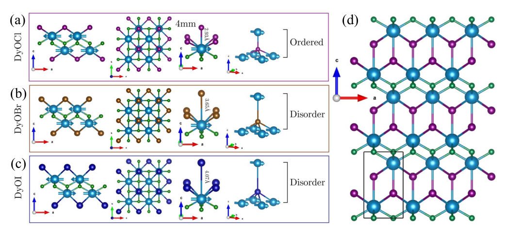
<figcaption class="paper-figure-caption"><b>Fig 1.</b> Figure 1. Crystal and magnetic structures of (a) DyOCl, (b) DyOBr and (c) DyOI. The Dy atoms and their magnetic dipole moments are represented by light blue spheres and arrows, respectively. Non-magnetic atoms are represented by green spheres for oxygen, and by purple (Cl), bronze (Br), and sapphire (I) spheres for halides. In each of the panels (a-c), the four subfigures represent, respectively: the bilayer of Dy3+ atoms and the associated intra-bilayer magnetic configuration viewed along the b-axis; the square lattice arrangement of the Dy3+</figcaption>
</figure>
<figure class="paper-figure-card">
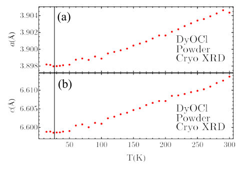
<figcaption class="paper-figure-caption"><b>Fig 2.</b> Figure 2. Temperature dependence of the lattice parameters of DyOCl extracted from powder x-ray diffraction data collected with λ = 1.54 Å. Values for a and c are found via Rietveld refinement in space group P4/nmm. The vertical line indicates the onset of thermomagnetic transitions in the heat capacity of DyOCl.</figcaption>
</figure>
<figure class="paper-figure-card">
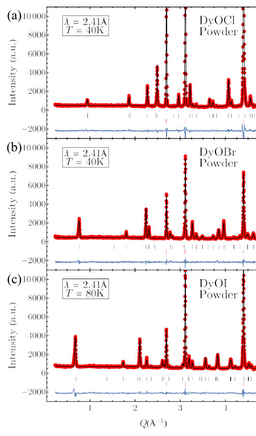
<figcaption class="paper-figure-caption"><b>Fig 3.</b> Figure 3. Powder neutron diffraction pattern (red points) for (a) Dy- OCl, (b) DyOBr, (c) DyOI measured with λ = 2.41 Å in the para- magnetic phase at T = 40 K or T = 80 K with corresponding best- fit structural Rietveld refinements (black lines) and residuals (blue lines). Nuclear peak positions are marked as black ticks. Aluminum peaks are marked as red ticks. The residual between the model and the data is marked at the bottom of each panel as a blue curve. We note that low-angle peaks suffer some asymmetry from instrument resolution effects and stacking faults that are not modeled at that stage.</figcaption>
</figure>
<figure class="paper-figure-card">
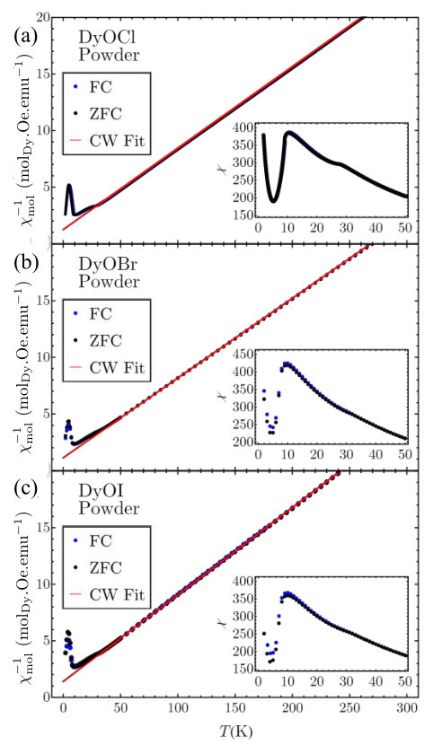
<figcaption class="paper-figure-caption"><b>Fig 4.</b> Figure 4. Inverse magnetic susceptibility in a field of µ0H=0.1 T as a function of temperature and cooling conditions for each of (a) DyOCl, (b) DyOBr, (c) DyOI. The red curves show fits to the Curie–Weiss law described in the text. The insets show the direct susceptibility over a restricted temperature range near the ordering transitions.</figcaption>
</figure>
<figure class="paper-figure-card">
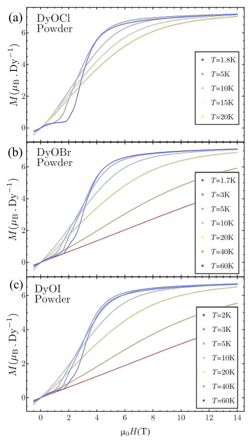
<figcaption class="paper-figure-caption"><b>Fig 5.</b> Figure 5. Isothermal magnetization for selected temperatures be- tween T = 1.7 K and 60 K measured on powder samples of (a) DyOCl, (b) DyOBr and (c) DyOI.</figcaption>
</figure>
</div>

<p><strong>Summary.</strong> This work characterizes the $  ext{DyOX}$ oxyhalides as tunable, quasi-2D rare-earth magnets. By measuring magnetic and spectroscopic properties, the authors establish evidence for distinct magnetic ordering and candidate multipolar physics linked to low-lying crystal-field states. The combination of structural tuning and advanced spectroscopy makes this a key platform for studying complex magnetic interactions.</p>
<p><strong>Why it may be interesting.</strong> The study provides a model system where dimensionality and magnetic interactions can be tuned chemically, offering insights into how low-dimensional quantum magnetism and multipolar interactions manifest in real materials.</p>
<details>
<summary>Detailed structure</summary>
<p><strong>Main problem.</strong> The study investigates the tunable inter-bilayer magnetic correlations and candidate multipolar physics within the van der Waals oxyhalides DyOX.</p>
<p><strong>Main result.</strong> The $  ext{DyOX}$ series is established as a tunable family of quasi-two-dimensional rare-earth magnets, exhibiting distinct magnetic ordering and crystal-field excitations that suggest underlying multipolar interactions.</p>
<p><strong>Method.</strong> The research combines structural characterization (X-ray/Neutron Diffraction) with magnetic measurements (Magnetization, Heat Capacity, INS) and theoretical modeling (Hamiltonian fitting).</p>
<p><strong>Model / system.</strong> The system is the $ ext{DyOX}$ family ($    ext{X} =    ext{Cl},    ext{Br},    ext{I}$), which features $  ext{Dy}^{3+}$ moments arranged in square-bilayer networks separated by a tunable van der Waals gap.</p>
<p><strong>Key observables.</strong> Antiferromagnetic ordering temperatures ($ ext{T}<em ext_Q="ext{Q">{    ext{N}} \approx 7-10    ext{ K}$), a high-temperature anomaly ($  ext{T}</em>$), crystal-field excitations (25-30 meV), and low-energy magnetic modes (10 meV).}} \approx 27-30   ext{ K</p>
<p><strong>Important parameters / regimes.</strong> Halide ionic radius (tuning the inter-bilayer spacing), magnetic field strength ($\mu_0H \approx 0.1 	ext{ T}$ to $14 	ext{ T}$), and energy scales (10 meV to 30 meV).</p>
<p><strong>Assumptions / limitations.</strong> The analysis assumes that the observed low-energy excitations are related to multipolar physics, although direct confirmation requires probes beyond the current scope (e.g., resonant X-ray scattering).</p>
<p><strong>Figures summary.</strong> Figures show crystal/magnetic structures, temperature-dependent neutron diffraction patterns revealing magnetic anomalies, and plots detailing crystal-field level splittings under various theoretical operators.</p>
<p><strong>Paper structure.</strong> The paper systematically analyzes structural changes with halide size, measures magnetic transitions ($    ext{T}<em ext_Q="ext{Q">{    ext{N}},    ext{T}</em>$), probes excitations via INS, and uses theoretical Hamiltonian fitting to constrain the nature of the magnetic interactions.}</p>
</details>
<details>
<summary>Abstract</summary>
<p>Rare-earth van der Waals magnets provide a route to combining strong spin-orbit coupling, large magnetic moments, and reduced dimensionality in bulk crystals. We report a comparative study of the dysprosium oxyhalides DyOX (X = Cl, Br, I), which realize square-bilayer networks of Dy3+ moments separated by a tunable van der Waals gap. Structural refinements show that increasing the halide ionic radius strongly expands the inter-bilayer spacing while leaving the local bilayer geometry nearly unchanged. Magnetization and heat-capacity measurements reveal two low-temperature anomalies in all three compounds: antiferromagnetic order at TN ~ 7-10 K and a broader anomaly near TQ ~ 27-30 K. Single-crystal magnetization on DyOCl and DyOBr establishes a strong hard-c-axis anisotropy, consistent with crystal-field analysis of DyOCl, which yields an XY-like ground-state g tensor. Neutron diffraction shows long-range antiferromagnetic order in DyOCl, whereas DyOBr and DyOI exhibit sharp magnetic scattering coexisting with Warren-like diffuse features, consistent with robust in-plane correlations and imperfect inter-bilayer registry. Inelastic neutron scattering on DyOCl identifies crystal-field excitations near 25-30 meV and an additional magnetic mode near 10 meV whose temperature dependence is tied to the high-temperature anomaly. Taken together, these results establish DyOX as a tunable family of quasi-two-dimensional rare-earth magnets and point to candidate multipolar physics associated with low-lying crystal-field states. Direct probes of quadrupolar order, such as resonant x-ray scattering or elastic-constant measurements, will be required to determine the order parameter at TQ.</p>
</details>
<p><sub><a href="#top">↑ back to top</a></sub></p>
<h2 id="other-papers-16">Other papers (16)</h2>
<p><em>Papers from primary archives without highlighted authors or any topic match. Click to expand.</em></p>
<details>
<summary>Show other papers</summary>

<p><a id="paper-2608.19787"></a></p>
<h3 id="constant-round-quantum-advantage-in-communication-complexity-for-total-functions"><a href="http://arxiv.org/abs/2608.19787v1">Constant-round quantum advantage in communication complexity for total functions</a></h3>
<p><strong>Authors:</strong> Atsuya Hasegawa, François Le Gall<br>
<strong>Type:</strong> theory · <strong>Category:</strong> quantum information and computing · <strong>PDF:</strong> <a href="https://arxiv.org/pdf/2608.19787v1">https://arxiv.org/pdf/2608.19787v1</a><br>
<strong>Analysis basis:</strong> full PDF text, analyzed in chunks</p>
<div class="figure-strip-hint">↔ Scroll figures horizontally</div>
<div class="paper-figures-scroll">
<figure class="paper-figure-card">
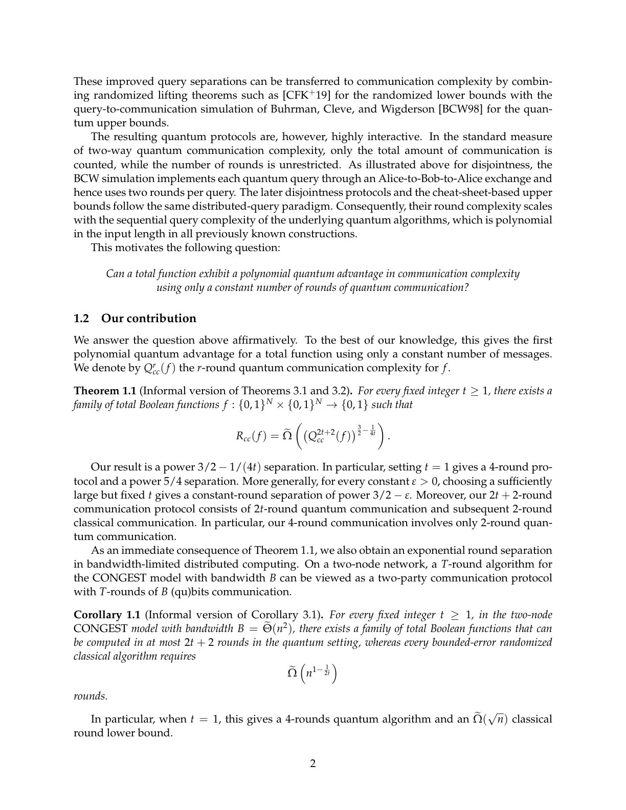
<figcaption class="paper-figure-caption"><b>Fig 1.</b> Low-resolution page preview, page 2</figcaption>
</figure>
<figure class="paper-figure-card">
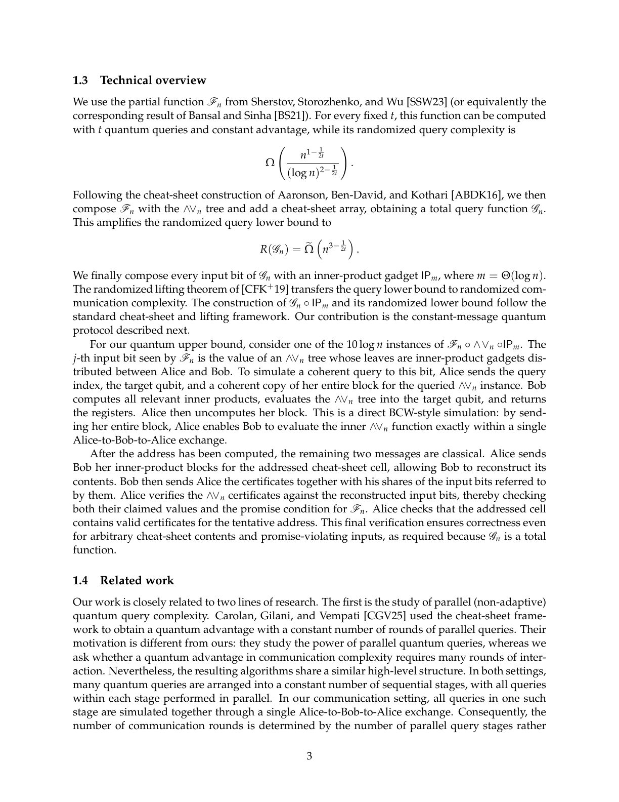
<figcaption class="paper-figure-caption"><b>Fig 2.</b> Low-resolution page preview, page 3</figcaption>
</figure>
<figure class="paper-figure-card">
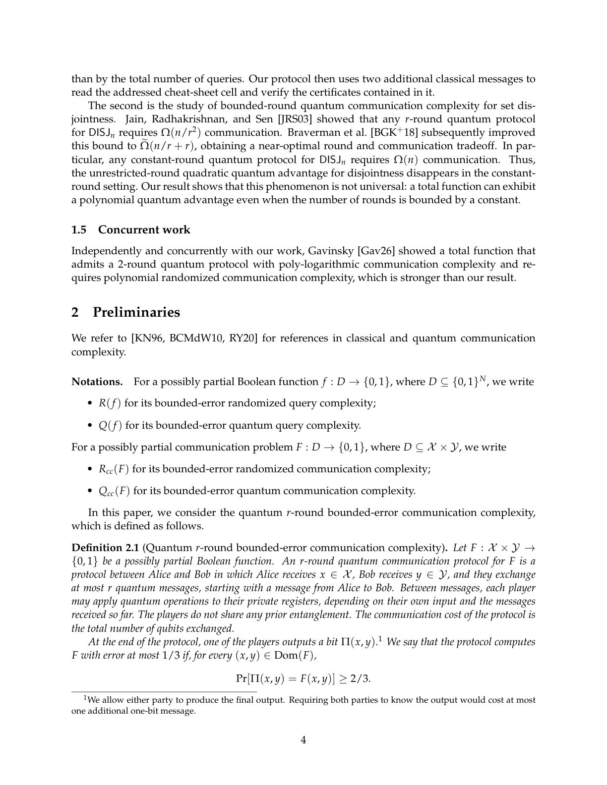
<figcaption class="paper-figure-caption"><b>Fig 3.</b> Low-resolution page preview, page 4</figcaption>
</figure>
<figure class="paper-figure-card">
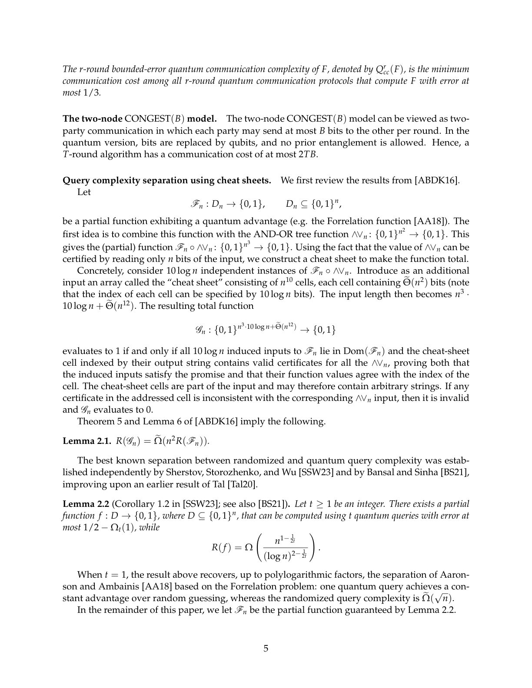
<figcaption class="paper-figure-caption"><b>Fig 4.</b> Low-resolution page preview, page 5</figcaption>
</figure>
<figure class="paper-figure-card">
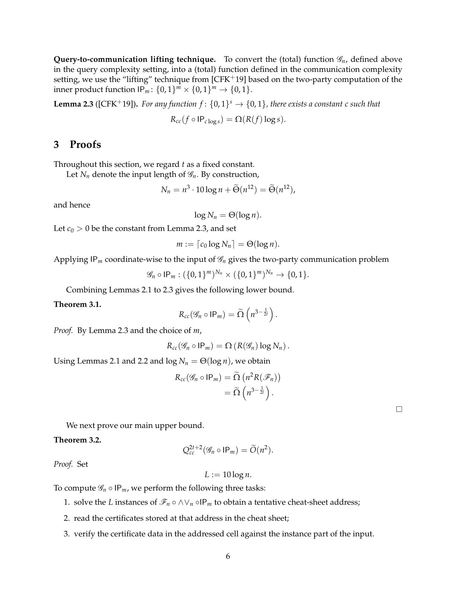
<figcaption class="paper-figure-caption"><b>Fig 5.</b> Low-resolution page preview, page 6</figcaption>
</figure>
</div>
<p><strong>Summary.</strong> This theoretical paper establishes a significant result showing a polynomial quantum advantage in communication complexity for certain total functions when restricted to a constant number of communication rounds. By constructing a hard function and analyzing it in the CONGEST model, the authors demonstrate an exponential separation between the required rounds for classical randomized algorithms versus quantum protocols. This advances the understanding of quantum computational power in highly constrained, interactive communication settings.</p>
<p><strong>Why it may be interesting.</strong> While the focus is on communication complexity rather than physical Hamiltonians, the techniques used to establish round separations in quantum communication models are fundamental to understanding the limits of quantum information processing in distributed settings.</p>
<details>
<summary>Detailed structure</summary>
<p><strong>Main problem.</strong> The paper investigates whether a polynomial quantum advantage exists in communication complexity for total functions when restricted to a constant number of communication rounds.</p>
<p><strong>Main result.</strong> They prove that for a specific family of functions, there is a polynomial separation between the randomized classical communication complexity and the constant-round quantum communication complexity.</p>
<p><strong>Method.</strong> The authors construct a complex total function by composing known hard functions ($F_n$ and $\wedge\vee_n$) and use the Inner Product function ($    ext{IP}_m$) to lift the problem into a communication complexity setting.</p>
<p><strong>Model / system.</strong> The analysis is conducted within the two-node CONGEST communication model, comparing classical randomized protocols against quantum protocols limited to a constant number of rounds.</p>
<p><strong>Key observables.</strong> The separation power between $R_{cc}(f)$ and $Q_{r	ext{cc}}(f)$, and the required number of communication rounds ($T$ vs. $2t+2$).</p>
<p><strong>Important parameters / regimes.</strong> The separation power is $\Omega(n^{3/2 - 1/(4t)})$, and the bandwidth $B_n = e^{\Theta(n^2)}$ is crucial for the round separation.</p>
<p><strong>Assumptions / limitations.</strong> The result holds for total Boolean functions, and the quantum protocol's round count is determined by the number of parallel query stages, not the total number of queries.</p>
<p><strong>Paper structure.</strong> The paper establishes the problem by reviewing previous quantum advantages, constructs a hard function $G_n$ using known techniques, and then analyzes the communication complexity by deriving lower bounds for classical protocols and upper bounds for quantum protocols in the CONGEST model.</p>
</details>
<details>
<summary>Abstract</summary>
<p>We show that there exists a total function for which there is a polynomial gap between the randomized and the constant-round quantum communication complexity. Previously, such a separation was known only for quantum protocols using polynomially many rounds.</p>
</details>
<p><sub><a href="#top">↑ back to top</a></sub></p>

<p><a id="paper-2608.19348"></a></p>
<h3 id="dataflows-and-computational-patterns-for-hybrid-quantum-classical-scientific-computing"><a href="http://arxiv.org/abs/2608.19348v1">Dataflows and Computational Patterns for Hybrid Quantum-Classical Scientific Computing</a></h3>
<p><strong>Authors:</strong> Ryan Landfield, Jordan J. Winetrout, Michael A. Sandoval<br>
<strong>Type:</strong> theory · <strong>Category:</strong> quantum information and computing · <strong>PDF:</strong> <a href="https://arxiv.org/pdf/2608.19348v1">https://arxiv.org/pdf/2608.19348v1</a><br>
<strong>Analysis basis:</strong> full PDF text, analyzed in chunks</p>
<div class="figure-strip-hint">↔ Scroll figures horizontally</div>
<div class="paper-figures-scroll">
<figure class="paper-figure-card">
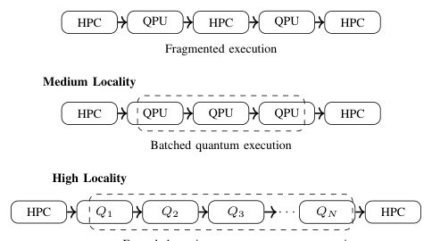
<figcaption class="paper-figure-caption"><b>Fig 1.</b> Fig. 1. Locality regimes in hybrid quantum-classical dataflows. Low-locality workflows repeatedly alternate between classical and quantum execution, medium-locality workflows batch quantum operations before classical syn- chronization, and high-locality workflows contain contiguous quantum com- pute regions in which computation remains resident on the QPU.</figcaption>
</figure>
</div>
<p><strong>Summary.</strong> This paper introduces the Quantum Execution Locality Framework (QELF) to move beyond describing quantum algorithms individually. QELF characterizes hybrid workflows based on their dataflow structure and how long computation remains resident on the QPU (locality). This framework shows that workflow structure, particularly maximizing quantum residency, is as critical as the algorithm itself for realizing quantum speedup.</p>
<p><strong>Why it may be interesting.</strong> It provides a high-level, structural vocabulary for analyzing quantum computation pipelines, which is crucial for understanding resource requirements beyond just circuit depth.</p>
<details>
<summary>Detailed structure</summary>
<p><strong>Main problem.</strong> Hybrid quantum-classical workflows are currently described by individual algorithms, failing to capture their underlying execution behavior, which limits the potential for quantum acceleration.</p>
<p><strong>Main result.</strong> The authors introduce the Quantum Execution Locality Framework (QELF), which classifies workflows into patterns based on their dataflow structure and quantum execution locality.</p>
<p><strong>Method.</strong> The framework models workflows as directed dataflows and classifies them into three locality regimes (Fragmented, Batched, Contiguous) based on the extent of computation resident on the QPU.</p>
<p><strong>Model / system.</strong> The focus is on the abstract computational structure of hybrid quantum-classical algorithms, using representative patterns like VQE, QAOA, and Hamiltonian simulation as examples.</p>
<p><strong>Key observables.</strong> Quantum Execution Locality (the central metric), Relative Quantum Residency, and the Computational Pattern Locality Class (Low, Medium, High).</p>
<p><strong>Important parameters / regimes.</strong> Coherence time, gate error, circuit depth, and the latency/fidelity requirements dictated by the specific computational pattern.</p>
<p><strong>Assumptions / limitations.</strong> The effectiveness of quantum acceleration depends critically on the workflow's structural locality, not just the algorithmic complexity.</p>
<p><strong>Figures summary.</strong> Figure 1 illustrates the three locality regimes in hybrid dataflows, and Table I summarizes five primary computational patterns, their function, and locality level.</p>
<p><strong>Paper structure.</strong> The paper introduces QELF to characterize workflows structurally, defines the locality regimes, proposes a computational pattern taxonomy (QOOL, QASP, etc.), and discusses the implications of locality for hardware co-design.</p>
</details>
<details>
<summary>Abstract</summary>
<p>Hybrid quantum-classical computing has emerged as the dominant paradigm for near-term quantum applications, yet hybrid workflows are typically described by individual algorithms rather than their underlying execution behavior. We introduce the Quantum Execution Locality Framework (QELF), a qualitative framework for characterizing hybrid quantum-classical workflows according to recurring dataflow structures and quantum execution locality, the extent to which computation remains resident on the Quantum Processing Unit (QPU) before host intervention or classical synchronization. From a representative cross-section of applications, QELF identifies five recurring computational patterns with distinct locality characteristics and discusses their implications for communication overhead, workflow organization, and future hybrid computing architectures. By providing a common vocabulary for reasoning about hybrid workloads, QELF establishes a foundation for future quantitative validation and the co-design of algorithms, runtime systems, and hybrid computing architectures.</p>
</details>
<p><sub><a href="#top">↑ back to top</a></sub></p>

<p><a id="paper-2608.19917"></a></p>
<h3 id="disassembling-qldpc-codes-for-depth-optimal-parity-check-circuits"><a href="http://arxiv.org/abs/2608.19917v1">Disassembling qLDPC codes for depth-optimal parity-check circuits</a></h3>
<p><strong>Authors:</strong> Minh T. P. Nguyen, Maximilian Rimbach-Russ, Stefano Bosco<br>
<strong>Type:</strong> theory · <strong>Category:</strong> quantum information and computing · <strong>PDF:</strong> <a href="https://arxiv.org/pdf/2608.19917v1">https://arxiv.org/pdf/2608.19917v1</a><br>
<strong>Analysis basis:</strong> full PDF text, analyzed in chunks</p>
<div class="figure-strip-hint">↔ Scroll figures horizontally</div>
<div class="paper-figures-scroll">
<figure class="paper-figure-card">
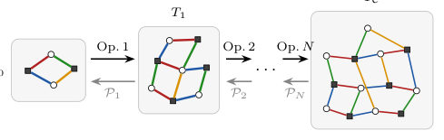
<figcaption class="paper-figure-caption"><b>Fig 1.</b> FIG. 1. Assembling and disassembling codes. A Tan- ner graph T0 is assembled into a qLDPC code TC through a sequence of operations (black arrows). Rather than construct- ing the parity-check circuit directly on TC, we reverse these operations by quotienting the graph edge symmetries (gray arrows), solve the reduced parity-check scheduling problem (edge colors) on T0, and lift the resulting circuit back to TC.</figcaption>
</figure>
<figure class="paper-figure-card">
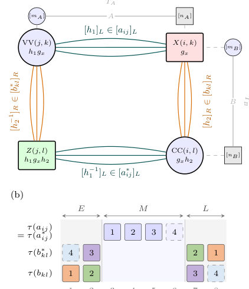
<figcaption class="paper-figure-caption"><b>Fig 2.</b> FIG. 2. LP(A, B) codes. (a) Tanner graph TLP, with checks X(i, k) (red), Z(j, l) (green) and data qubits VV(j, k), CC(i, l) (blue). The second line of each vertex is its group coordinate, its position in the fiber over TA □TB. Teal bundles run through [aij]L, [a∗ ij]L and orange bundles through [bkl]R, [b∗ kl]R, one edge per group element of the en- try. (b) Sandwich parity-check circuit for ∆A = ∆B = 4, with P□merging the horizontal edges. Rows give the CNOT layer τ after edge coloring and entries are the color indices. Dashed cells are present only for even degree: ∆A = 3 shortens M by a layer, whereas ∆B = 3 empties one outer entry on each side without narrowing E, L.</figcaption>
</figure>
<figure class="paper-figure-card">
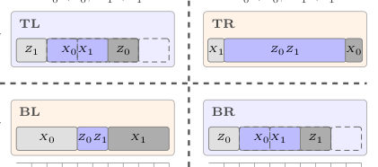
<figcaption class="paper-figure-caption"><b>Fig 3.</b> FIG. 3. Parity-check circuit of QT codes. Schedule in- duced by the canonical orientation, for C = C′ = [6, 3, 3] of Ref. [36] with ∆= 10. Rows and columns of the base surface are halved (dashed) and given opposite orientations (listed be- side the corresponding half). The four relations compose into a total order in each quadrant, such each schedule per quad- rant has again a sandwich structure; shading marks whether the X- (blue) or Z-families (orange) occupy the middle band.</figcaption>
</figure>
</div>
<p><strong>Summary.</strong> This paper presents a novel technique to drastically reduce the circuit depth required for syndrome extraction in qLDPC quantum error-correcting codes. By mathematically 'disassembling' the codes using their inherent symmetries, the authors can solve the scheduling problem on a much simpler graph. This leads to provably optimal or near-optimal CNOT depth circuits for various structured qLDPC families.</p>
<p><strong>Why it may be interesting.</strong> While focused on quantum computation, the techniques developed—exploiting underlying algebraic symmetries to simplify complex scheduling problems—are highly relevant to optimizing control circuits in any physical quantum system.</p>
<details>
<summary>Detailed structure</summary>
<p><strong>Main problem.</strong> The primary goal is to design highly efficient, low-CNOT-depth circuits for syndrome extraction in Quantum Low-Density Parity-Check (qLDPC) codes.</p>
<p><strong>Main result.</strong> The authors demonstrate a method to achieve depth-optimal or near-optimal CNOT depth for specific qLDPC families (LP and BP codes) by exploiting underlying code symmetries.</p>
<p><strong>Method.</strong> The core method involves 'disassembling' the complex code structure by quotienting symmetries, solving the scheduling problem on a reduced graph, and then 'lifting' the resulting circuit back to the full code.</p>
<p><strong>Model / system.</strong> The system modeled is the quantum error correction process using qLDPC codes. The circuit structure is analyzed via the Tanner graph, which represents the parity checks acting on data and ancilla qubits.</p>
<p><strong>Key observables.</strong> CNOT Depth (the maximum time label $\max 	au(e)$), which must be minimized, and the satisfaction of 'properness constraints' for circuit validity.</p>
<p><strong>Important parameters / regimes.</strong> The depth bound $\Delta \le \Delta_X + \Delta_Z$, and the structure of the code components (e.g., hypergraph products, group lifts).</p>
<p><strong>Assumptions / limitations.</strong> The method assumes that good qLDPC codes possess substantial structure derived from known algebraic operations, and that the properness constraint can be correctly transformed under symmetry partitions.</p>
<p><strong>Figures summary.</strong> Figures illustrate the general process of code assembly/disassembly via symmetry quotienting, the Tanner graph structure for LP codes, and the resulting 'sandwich structure' of the required parity-check circuit schedule (E-M-L bands).</p>
<p><strong>Paper structure.</strong> The paper builds from the general problem of syndrome extraction efficiency, details the algebraic framework for exploiting code symmetries (disassembly/reassembly), applies this framework analytically to LP/BP codes, and then applies it numerically to Quantum Tanner (QT) codes.</p>
</details>
<details>
<summary>Abstract</summary>
<p>Quantum low-density parity-check (qLDPC) codes offer a promising route to scalable fault-tolerant quantum computing, but their practical implementation requires efficient circuits for syndrome extraction. Many qLDPC families are assembled from a small set of components through explicit constructions that imprint edge symmetries on their Tanner graphs. We show that these symmetries can be exploited to design syndrome-extraction circuits from the underlying components, rather than from the full quantum code. For Lifted Product and Balanced Product codes this approach yields an analytical construction with provably optimal or near-optimal CNOT depth. For Quantum Tanner codes it produces depth-optimal circuits on every instance we test, including codes up to nearly 600 data qubits.</p>
</details>
<p><sub><a href="#top">↑ back to top</a></sub></p>

<p><a id="paper-2608.20016"></a></p>
<h3 id="emergence-of-cooperation-a-reputation-modulated-reinforcement-learning"><a href="http://arxiv.org/abs/2608.20016v1">Emergence of cooperation: A reputation-modulated reinforcement learning</a></h3>
<p><strong>Authors:</strong> Chenyang Zhao, Jiqiang Zhang, Li Chen, Yong Zou<br>
<strong>Type:</strong> theory · <strong>Category:</strong> disordered systems and neural networks · <strong>PDF:</strong> <a href="https://arxiv.org/pdf/2608.20016v1">https://arxiv.org/pdf/2608.20016v1</a><br>
<strong>Analysis basis:</strong> full PDF text, analyzed in chunks</p>
<div class="figure-strip-hint">↔ Scroll figures horizontally</div>
<div class="paper-figures-scroll">
<figure class="paper-figure-card">
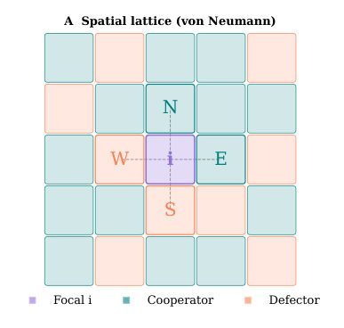
<figcaption class="paper-figure-caption"><b>Fig 1.</b> Figure 1: Schematic illustration of the reputation-modulated Q-learning model. Agents are placed on a square lattice and play the prisoner’s dilemma game with their four nearest neighbors. After each round, an agent’s reputation increases if it cooperates; otherwise, it decreases if it defects. The local reputation level determines how agents evaluate their learning reward: when neighborhood reputation is low, agents mainly rely on their own payoff, while a high reputation increases the weight of the neighbors’ average payoff. The resulting reputation-weighted fitness is then used to update the Q table, which in turn guides subsequent action choices through an ε-greedy rule.</figcaption>
</figure>
<figure class="paper-figure-card">
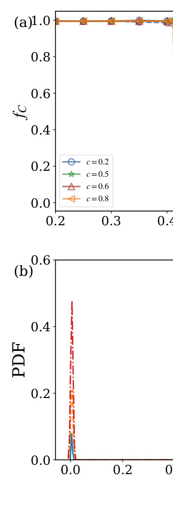
<figcaption class="paper-figure-caption"><b>Fig 2.</b> Figure 2: Discontinuous phase transition of cooperation under reputation-modulated dy- namics. (a) The level of cooperation fC as a function of the temptation parameter b for different reputation update rates c. The dashed region indicates the bistable regime obtained from different random initial configurations. (b) Probability density function (PDF) of the cooperation level fC, revealing the coexistence between cooperative and defective states near the discontinuous transi- tion. Other parameters: c = 0.5 in panel (b). 8</figcaption>
</figure>
<figure class="paper-figure-card">
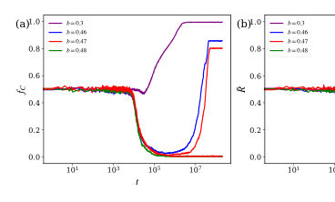
<figcaption class="paper-figure-caption"><b>Fig 3.</b> Figure 3: (a) Temporal evolution of the cooperation level fC for four chosen values of b (shown in the legend). The red curve (b = 0.47) exhibits bistable dynamics under random initial conditions, indicating the coexistence of cooperative and defective attractors near the critical regime. (b) The corresponding temporal evolution of the average reputation of (a). (c) Bimodal distribution of steady-state reputation for b = 0.47 under random initial conditions, showing the spontaneous polarization of agents into low- and high-reputation groups. Other parameters: c = 0.5, α = 0.1, γ = 0.9.</figcaption>
</figure>
<figure class="paper-figure-card">
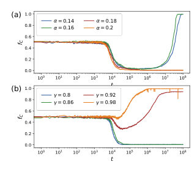
<figcaption class="paper-figure-caption"><b>Fig 4.</b> Figure 4: (a) Time evolution of the cooperation level for different learning rates α at a fixed discount factor γ = 0.9. (b) Time evolution for different discount factors γ at a fixed learning rate α = 0.1. (c) Phase diagram in the (α, γ) parameter space. The color encodes the steady-state value of fC ∈[0, 1]. Note that the extreme cases α = 0, 1 and γ = 0, 1 are excluded, as they correspond to trivial or degenerate learning dynamics. Accordingly, both parameters are restricted to the interval [0.02, 0.98]. Other parameters are: ϵ = 0.01, b = 0.42, and c = 0.2.</figcaption>
</figure>
<figure class="paper-figure-card">
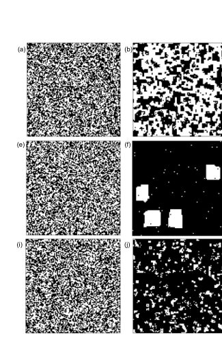
<figcaption class="paper-figure-caption"><b>Fig 5.</b> Figure 5: Typical spatial configurations illustrating the evolution of cooperation at a fixed reputation update rate c = 0.5. Cooperators and defectors are represented by white and black sites, respectively. (a-d) Snapshots at t = 0, 105, 106, and 107 for b = 0.3, showing the rapid expansion of cooperative domains toward a highly cooperative state. (e-h) Snapshots at t = 0, 107, 7 × 107, and 15 × 107 for the left side of the transition point b = 0.47, where cooperation emerges through the nucleation and growth of cooperative clusters. (i-l) Snapshots at t = 0, 104, 2 × 104, and 105 for the defective side of the transition point b = 0.47, illustrating the gradual extinction of cooperative...</figcaption>
</figure>
</div>
<p><strong>Summary.</strong> This work models cooperation in a spatial game where agents learn using reinforcement learning, incorporating a reputation metric into their reward signal. It demonstrates that reputation acts as a crucial information filter, allowing cooperation to emerge and persist even when direct incentives are weak. The findings highlight that reputation's role is to reshape the social information landscape, not just provide direct payoffs.</p>
<p><strong>Why it may be interesting.</strong> While the core topic is game theory, the use of reinforcement learning (Q-learning) and the modeling of adaptive behavior in a lattice structure connects to concepts in complex adaptive systems and the use of neural network principles in physical modeling.</p>
<details>
<summary>Detailed structure</summary>
<p><strong>Main problem.</strong> The paper addresses how reputation can sustain cooperation among self-interested agents, moving beyond models that treat reputation merely as an external payoff modifier.</p>
<p><strong>Main result.</strong> Reputation-modulated learning significantly promotes cooperation, leading to a discontinuous phase transition from full cooperation to full defection as the temptation parameter increases.</p>
<p><strong>Method.</strong> The study uses a spatial prisoner's dilemma game framework where agents employ Q-learning, modifying their fitness function to incorporate a locally defined reputation metric.</p>
<p><strong>Model / system.</strong> The model is a spatial prisoner's dilemma played on a lattice network, where agents update their Q-values based on a fitness function that is a convex combination of personal and neighborhood payoffs, weighted by local reputation.</p>
<p><strong>Key observables.</strong> Cooperation level (rho_C), average reputation (R_i), and the prevalence of cooperation (f_C).</p>
<p><strong>Important parameters / regimes.</strong> Temptation parameter (b), learning rate (alpha), discount factor (gamma), and the reputation update constant (c).</p>
<p><strong>Assumptions / limitations.</strong> The analysis assumes agents interact only with their four nearest neighbors and utilizes approximations like the adiabatic approximation in the theoretical analysis.</p>
<p><strong>Figures summary.</strong> Figures illustrate the feedback loop of the model, show the Q-table structure, and demonstrate the hysteresis loop (bistability) of cooperation prevalence versus dilemma strength.</p>
<p><strong>Paper structure.</strong> The paper introduces the gap in existing models, details the reputation-modulated Q-learning mechanism, presents simulation results showing phase transitions, and concludes by analyzing the mechanism's role in shaping social information landscapes.</p>
</details>
<details>
<summary>Abstract</summary>
<p>Reputation is widely recognized as a key mechanism for sustaining cooperation. However, most existing game-theoretic models treat reputation primarily as an external factor that modulates payoffs, interaction structures, or strategy update rules. In many social contexts, though, reputation operates primarily as information -- it shapes how individuals interpret their own experiences and assess the behavior of others. To bridge this gap, we propose a spatial prisoner's dilemma game grounded in the reinforcement learning paradigm, in which agents equipped with Q-learning integrate both individual and social information via a locally defined reputation metric to guide their decisions. Our results reveal that reputation-modulated learning significantly promotes the emergence of cooperative behavior, and we observe a discontinuous phase transition from full cooperation to full defection as the temptation increases. Cooperation spreads through the nucleation of cooperative clusters, whereas the disintegration of these clusters drives the system into an absorbing state of complete defection. Overall, this study demonstrates that reputation facilitates cooperation not only by providing direct incentives but also by reshaping the social information landscape that agents rely on for learning and adaptation.</p>
</details>
<p><sub><a href="#top">↑ back to top</a></sub></p>

<p><a id="paper-2608.20276"></a></p>
<h3 id="flip-rate-prediction-in-the-double-pendulum"><a href="http://arxiv.org/abs/2608.20276v1">Flip rate prediction in the double pendulum</a></h3>
<p><strong>Authors:</strong> Peleg Haham, Barak Kol<br>
<strong>Type:</strong> theory · <strong>Category:</strong> statistical mechanics · <strong>PDF:</strong> <a href="https://arxiv.org/pdf/2608.20276v1">https://arxiv.org/pdf/2608.20276v1</a><br>
<strong>Analysis basis:</strong> full PDF text, analyzed in chunks</p>
<div class="figure-strip-hint">↔ Scroll figures horizontally</div>
<div class="paper-figures-scroll">
<figure class="paper-figure-card">
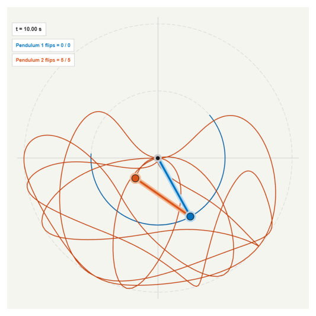
<figcaption class="paper-figure-caption"><b>Fig 1.</b> FIG. 1. A typical chaotic trajectory of the double pendulum. The colored curves trace the paths of the two point masses; in this example, the second pendulum undergoes several flips while the first does not.</figcaption>
</figure>
<figure class="paper-figure-card">
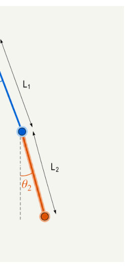
<figcaption class="paper-figure-caption"><b>Fig 2.</b> FIG. 2. An example of a double pendulum system</figcaption>
</figure>
<figure class="paper-figure-card">
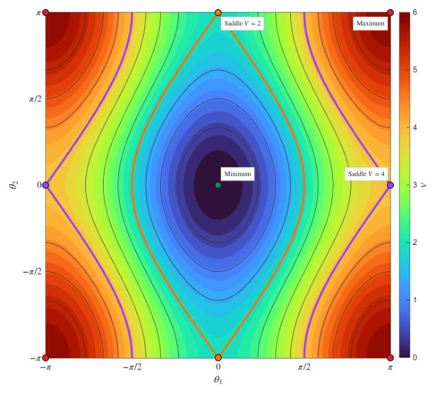
<figcaption class="paper-figure-caption"><b>Fig 3.</b> FIG. 3. Potential energy contour map of the double pendulum with equal lengths and masses, L1 = L2 = 1 and m1 = m2 = 1, in units where g = 1. The corresponding potential energy is V (θ1, θ2) = −2 cos θ1 −cos θ2 + 3.</figcaption>
</figure>
<figure class="paper-figure-card">
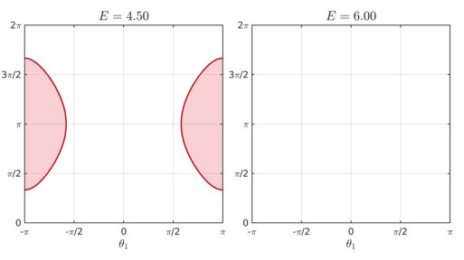
<figcaption class="paper-figure-caption"><b>Fig 4.</b> FIG. 4. Allowed configuration space at different energies For the egalitarian double pendulum</figcaption>
</figure>
<figure class="paper-figure-card">

<figcaption class="paper-figure-caption"><b>Fig 5.</b> Figure 4 shows the configuration space region satisfying V (θ1, θ2) ≤E with the energetically forbidden region</figcaption>
</figure>
</div>
<p><strong>Summary.</strong> This work develops a statistical, flux-based method to predict the mean rate of 'flips' in the chaotic double pendulum. By identifying the saddle orbit as the optimal dividing surface, the authors achieve quantitative agreement between their theoretical predictions and extensive numerical simulations. This validates the use of phase-space flux techniques for characterizing chaotic recurrence in classical Hamiltonian systems.</p>
<p><strong>Why it may be interesting.</strong> The rigorous application of phase-space flux methods, typically used in classical statistical mechanics, to quantify chaotic dynamics and recurrence rates in a mechanical system provides a powerful, generalizable theoretical tool for non-equilibrium dynamics.</p>
<details>
<summary>Detailed structure</summary>
<p><strong>Main problem.</strong> The paper aims to develop a statistical theory to predict the mean flip rate in the intermediate-energy double pendulum, a prototypical chaotic system.</p>
<p><strong>Main result.</strong> The flux-based statistical prediction for the mean flip rate shows excellent agreement (1% for ensemble averages) with numerical simulations, validating the ergodic approximation.</p>
<p><strong>Method.</strong> The prediction is based on calculating the phase-space flux through a carefully chosen dividing surface, identified as the saddle orbit, which naturally avoids recrossings.</p>
<p><strong>Model / system.</strong> The system is the double pendulum, treated as an autonomous, conservative Hamiltonian system. The dynamics are governed by a Hamiltonian involving potential and kinetic energy terms.</p>
<p><strong>Key observables.</strong> Mean flip rate, phase-space flux, and the distribution of crossing times.</p>
<p><strong>Important parameters / regimes.</strong> Total energy (E), mass ratios, and arm lengths (L1, L2).</p>
<p><strong>Assumptions / limitations.</strong> The primary assumption is the validity of the ergodic approximation, although the authors note limitations when regular regions are present.</p>
<p><strong>Figures summary.</strong> Figures illustrate typical chaotic trajectories, the system potential energy contours, and comparisons between the flux prediction and simulation results.</p>
<p><strong>Paper structure.</strong> The paper develops the statistical framework using phase-space flux, refines the definition of the flip dividing surface by analyzing criteria (upright vs. saddle orbit), and finally applies the flux calculation to derive and test the mean flip rate prediction.</p>
</details>
<details>
<summary>Abstract</summary>
<p>The intermediate-energy double pendulum is a prototypical chaotic system. Despite its irregular motion, it exhibits recurrent flips - events in which one of the arms passes over the top. We develop a statistical prediction for the mean flip rate in terms of phase space flux. Applying this flux-based approach to the equal-mass, equal arm ("egalitarian") double pendulum, we find excellent agreement between the statistical prediction and numerical simulations: ensemble-averaged flip rates agree at about the 1% level, while even the statistics of individual chaotic trajectories agree at the few-percent level, quantifying the validity of the ergodic approximation. This agreement holds for flips of either arm and over a broad range of energies. This flux-based approach is closely related to that used for the egalitarian three-body system.   A central role is played by the saddle orbits: periodic orbits that tend to the stable saddle eigenmode as the energy approaches the saddle energy from above and approximately follow the ridge of the potential at higher energies. These orbits provide a natural dividing surface for defining flips while avoiding recrossings. Indeed, the resulting distribution of crossing times exhibits a distinct gap. We also present two alternative simplified dividing surfaces, one of which is based on an accurate analytic approximation to the saddle orbits.</p>
</details>
<p><sub><a href="#top">↑ back to top</a></sub></p>

<p><a id="paper-2608.20333"></a></p>
<h3 id="maximal-torus-topological-entanglement-entropy-in-wzw-theories-at-bounded-ground-state-degeneracy"><a href="http://arxiv.org/abs/2608.20333v1">Maximal Torus Topological Entanglement Entropy in WZW Theories at Bounded Ground-State Degeneracy</a></h3>
<p><strong>Authors:</strong> Ce Shen<br>
<strong>Type:</strong> theory · <strong>Category:</strong> strongly correlated electrons · <strong>PDF:</strong> <a href="https://arxiv.org/pdf/2608.20333v1">https://arxiv.org/pdf/2608.20333v1</a><br>
<strong>Analysis basis:</strong> full PDF text, analyzed in chunks</p>
<div class="figure-strip-hint">↔ Scroll figures horizontally</div>
<div class="paper-figures-scroll">
<figure class="paper-figure-card">

<figcaption class="paper-figure-caption"><b>Fig 1.</b> Figure 1. A torus divided into cylinders A and ¯A. Their two circular boundaries, of lengths ℓ1 and ℓ2, form the entanglement cut. The blue loop carries anyon flux a.</figcaption>
</figure>
<figure class="paper-figure-card">

<figcaption class="paper-figure-caption"><b>Fig 2.</b> Figure 2. Integrable Sp(2n)k sectors correspond to lattice paths in an n × k rectangle, or to n occupied sites among n + k ordered sites. Transposition exchanges occupied and empty sites, so n = k is half filling. The path shown has (n, k) = (5, 7).</figcaption>
</figure>
</div>
<p><strong>Summary.</strong> This theoretical paper establishes the upper bound for the topological entanglement entropy in WZW theories, finding it scales quadratically with the logarithm of the system's complexity ($R$). The maximum value is achieved by the symplectic series, providing a rigorous mathematical benchmark for topological order in quantum field theories.</p>
<p><strong>Why it may be interesting.</strong> The connection between topological entanglement entropy in conformal field theories and universal mathematical constants ($\zeta(3)$) provides deep insights into the structure of quantum entanglement in condensed matter systems, particularly those exhibiting topological order.</p>
<details>
<summary>Detailed structure</summary>
<p><strong>Main problem.</strong> The paper aims to determine the maximum possible value of the universal contribution to the torus Topological Entanglement Entropy ($\Gamma_{T^2}$) for Wess–Zumino–Witten (WZW) theories, subject to a constraint on the number of simple objects.</p>
<p><strong>Main result.</strong> The maximum asymptotic value is found to be $\Gamma_{\max}(R) \sim rac{7\zeta(3)}{4\pi^2} q_R^2$ as $R 	o \infty$, a bound attained by the symplectic sequence $  ext{Sp}(2n)_n$.</p>
<p><strong>Method.</strong> The analysis involves maximizing the ratio of logarithmic quantities derived from the total quantum dimension and the number of simple objects, utilizing entropy–spectral inequalities and asymptotic analysis for various Lie algebra types.</p>
<p><strong>Model / system.</strong> The study concerns untwisted Wess–Zumino–Witten modular tensor categories $\mathcal{C}(\mathfrak{g}, k)$, which model $(2+1)$-dimensional topological order and are related to Chern–Simons theories.</p>
<p><strong>Key observables.</strong> Topological Entanglement Entropy contribution ($\Gamma_{T^2}$), Total quantum dimension ($D$), and Categorical Rank ($r(\mathfrak{g}, k)$).</p>
<p><strong>Important parameters / regimes.</strong> The constraint $r(\mathfrak{g}, k) \le R$, and the asymptotic limit $R 	o \infty$.</p>
<p><strong>Assumptions / limitations.</strong> The optimization is restricted to untwisted affine simple Lie algebras at positive integral levels, and the analysis relies on asymptotic proportionality between rank and level.</p>
<p><strong>Figures summary.</strong> Figures illustrate the torus cut for entanglement entropy and provide mathematical statements of the main asymptotic results relating the maximum entropy to the square of the logarithm of the rank bound.</p>
<p><strong>Paper structure.</strong> The paper systematically analyzes the problem by first defining the TEE contribution, then deriving asymptotic bounds using spectral inequalities, and finally identifying the optimal sequence (symplectic) that achieves the global maximum bound.</p>
</details>
<details>
<summary>Abstract</summary>
<p>For an untwisted Wess--Zumino--Witten modular tensor category $\cC(\mathfrak g,k)$, let $r(\mathfrak g,k)$ be the number of simple objects and $\cD(\mathfrak g,k)$ its total quantum dimension. The vacuum-flux state on a torus divided into two cylinders has positive universal entropy contribution $Γ_{T^2}=2\log\cD$. We maximize this quantity over all simple Lie algebras and positive integral levels subject to $r(\mathfrak g,k)\leq R$. If $q_R=\log_2R$, then $Γ_{\max}(R)\sim[7ζ(3)/(4π^2)]q_R^2$ as $R\to\infty$.   The sequence $Sp(2n)_n$ attains the asymptotic coefficient. At equal rank   and level, the Fourier expansion of the type-$C$ root product loses its even modes, leaving $2π^{-2}\sum_{m\,\mathrm{odd}}m^{-3}=7ζ(3)/(4π^2)$. An entropy--spectral inequality proves optimality among the classical families, while rank--level duality and fixed-rank estimates control unbalanced and exceptional sequences.</p>
</details>
<p><sub><a href="#top">↑ back to top</a></sub></p>

<p><a id="paper-2608.19619"></a></p>
<h3 id="moore-read-construction-and-explicit-monodromies-of-laughlin-states-on-riemann-surfaces"><a href="http://arxiv.org/abs/2608.19619v1">Moore--Read construction and explicit monodromies of Laughlin states on Riemann surfaces</a></h3>
<p><strong>Authors:</strong> Kiyoon Eum<br>
<strong>Type:</strong> theory · <strong>Category:</strong> strongly correlated electrons · <strong>PDF:</strong> <a href="https://arxiv.org/pdf/2608.19619v1">https://arxiv.org/pdf/2608.19619v1</a><br>
<strong>Analysis basis:</strong> full PDF text, analyzed in chunks</p>
<div class="figure-strip-hint">↔ Scroll figures horizontally</div>
<div class="paper-figures-scroll">
<figure class="paper-figure-card">

<figcaption class="paper-figure-caption"><b>Fig 1.</b> Low-resolution page preview, page 2</figcaption>
</figure>
<figure class="paper-figure-card">

<figcaption class="paper-figure-caption"><b>Fig 2.</b> Low-resolution page preview, page 3</figcaption>
</figure>
<figure class="paper-figure-card">

<figcaption class="paper-figure-caption"><b>Fig 3.</b> Low-resolution page preview, page 4</figcaption>
</figure>
<figure class="paper-figure-card">

<figcaption class="paper-figure-caption"><b>Fig 4.</b> Low-resolution page preview, page 5</figcaption>
</figure>
<figure class="paper-figure-card">

<figcaption class="paper-figure-caption"><b>Fig 5.</b> Low-resolution page preview, page 6</figcaption>
</figure>
</div>
<p><strong>Summary.</strong> This paper develops a rigorous mathematical framework to describe Laughlin states for the Fractional Quantum Hall Effect on curved surfaces. By linking the physical state to a U(1)_k Chern-Simons theory, the authors compute the topological properties, such as monodromies and the Hall conductance, using advanced concepts from algebraic geometry and conformal field theory.</p>
<p><strong>Why it may be interesting.</strong> The deep connection between topological field theory (Chern-Simons theory), geometric quantization (vector bundles over Jacobians), and the physical properties of strongly correlated electron systems (FQHE) provides powerful mathematical tools for understanding emergent quantum phenomena.</p>
<details>
<summary>Detailed structure</summary>
<p><strong>Main problem.</strong> The paper aims to rigorously relate the Moore--Read construction of Laughlin states on Riemann surfaces to their low-energy description via U(1)_k Chern--Simons theory.</p>
<p><strong>Main result.</strong> The authors compute the explicit monodromies of the Laughlin states, showing they match the adiabatic holonomies derived from the CS theory, and establish the state bundle's isomorphism with the direct image Laughlin bundle.</p>
<p><strong>Method.</strong> The work uses the CS/WZW correspondence to derive the wavefunctional on Riemann surfaces, computes monodromies via conformal blocks, and employs algebraic geometry to analyze the resulting vector bundles.</p>
<p><strong>Model / system.</strong> The system is the Fractional Quantum Hall Effect (FQHE) described by Laughlin states at filling fraction $\nu = 1/k$. The theoretical framework involves Chern--Simons theory on compact Riemann surfaces $\Sigma$ of genus $g \ge 1$.</p>
<p><strong>Key observables.</strong> Hall conductance ($\sigma_H = 1/k$), quasi-hole monodromies, and the characteristic classes of the state bundle.</p>
<p><strong>Important parameters / regimes.</strong> Filling fraction $1/k$, genus $g$ of the surface $\Sigma$, and the background magnetic flux $N_{\Phi}$.</p>
<p><strong>Assumptions / limitations.</strong> The identification of the Chern connection with the microscopic Berry connection requires a higher genus screening type argument, and the calculation determines the <em>averaged</em> Hall conductance, not the pointwise Berry curvature.</p>
<p><strong>Paper structure.</strong> The paper progresses by first establishing the correspondence on the plane, then generalizing the wavefunctional derivation to Riemann surfaces using the effective CS Lagrangian, and finally comparing the resulting automorphy bundle structure with known algebro-geometric descriptions of Laughlin states.</p>
</details>
<details>
<summary>Abstract</summary>
<p>We revisit the Moore--Read construction of the $ν=1/k$ Laughlin states on compact Riemann surfaces, deriving their conformal blocks from $U(1)_k$ Chern--Simons theory through the CS/WZW correspondence. We compute their explicit monodromies under quasi-hole transport and Aharonov--Bohm flux insertion, and conjecture that these coincide with the corresponding adiabatic holonomies. Under this identification, we recover classical results on Laughlin states including the flux-averaged Hall conductance $1/k$ via a vector bundle of Laughlin states over $Jac(Σ)$. We also relate our construction to the recently developed algebro-geometric approach to higher genus Laughlin states.</p>
</details>
<p><sub><a href="#top">↑ back to top</a></sub></p>

<p><a id="paper-2608.20297"></a></p>
<h3 id="parallel-quantum-advantage-with-limited-adaptivity-requires-structure"><a href="http://arxiv.org/abs/2608.20297v1">Parallel Quantum Advantage with Limited Adaptivity Requires Structure</a></h3>
<p><strong>Authors:</strong> Qipeng Liu, Saachi Mutreja<br>
<strong>Type:</strong> theory · <strong>Category:</strong> quantum information and computing · <strong>PDF:</strong> <a href="https://arxiv.org/pdf/2608.20297v1">https://arxiv.org/pdf/2608.20297v1</a><br>
<strong>Analysis basis:</strong> full PDF text, analyzed in chunks</p>
<div class="figure-strip-hint">↔ Scroll figures horizontally</div>
<div class="paper-figures-scroll">
<figure class="paper-figure-card">

<figcaption class="paper-figure-caption"><b>Fig 1.</b> Figure 1: Parallel query algorithms considered in this work. The last wire indicates the ancilla.</figcaption>
</figure>
</div>
<p><strong>Summary.</strong> This work makes significant progress on the Simulation Conjecture by proving that quantum algorithms utilizing massively parallel queries can be efficiently simulated classically. The authors extend these results to handle limited adaptivity, providing strong theoretical bounds on when quantum speedups are achievable. This research deepens the understanding of the structural requirements necessary for genuine quantum computational advantage.</p>
<p><strong>Why it may be interesting.</strong> While focused on query complexity, the rigorous mathematical techniques involving distribution coupling and simulation bounds are fundamental tools applicable to analyzing the complexity of quantum processes in general.</p>
<details>
<summary>Detailed structure</summary>
<p><strong>Main problem.</strong> The paper investigates the Simulation Conjecture, which posits that quantum query algorithms admit efficient classical simulation unless the input structure is highly specialized.</p>
<p><strong>Main result.</strong> The authors prove simulation theorems for quantum algorithms involving massively parallel queries, extending results to algorithms with bounded adaptivity or polynomial classical preprocessing.</p>
<p><strong>Method.</strong> The core method involves establishing a 'coupling theorem' relating the uniform distribution over oracles to 'dense distributions,' allowing the simulation of quantum advantage claims.</p>
<p><strong>Model / system.</strong> The model is quantum query algorithms acting on boolean inputs, focusing specifically on the computational complexity derived from parallel query structures.</p>
<p><strong>Key observables.</strong> Acceptance probability, error parameters (epsilon, delta), and query complexity (T).</p>
<p><strong>Important parameters / regimes.</strong> The number of parallel query layers (d) and the degree of adaptivity (constant rounds or polynomial classical queries).</p>
<p><strong>Assumptions / limitations.</strong> The analysis builds upon the Dense Indistinguishability Conjecture, which is used to bound the difference in success probabilities between uniform and dense oracle distributions.</p>
<p><strong>Figures summary.</strong> Figure 1 illustrates the structure of parallel query algorithms, showing the preparation stage, the massively parallel query stage, and the final measurement.</p>
<p><strong>Paper structure.</strong> The paper progresses by first tackling purely parallel query algorithms, then extending the simulation bounds to include limited adaptive quantum or classical prefixes, culminating in bounds for constant rounds of adaptivity.</p>
</details>
<details>
<summary>Abstract</summary>
<p>Aaronson and Ambainis (Theory of Computing, 2014) conjectured that quantum query algorithms admit efficient almost-everywhere classical simulation: for any $T$-query quantum algorithm, its acceptance probability can be approximated on a $(1-δ)$ fraction of inputs, up to $ε$ additive error, using $\mathrm{poly}(T, 1/ε, 1/δ)$ classical queries. At a high level, the conjecture suggests that exponential quantum speedups are possible only on sufficiently structured inputs.   In this work, we make progress on this conjecture by proving it for quantum algorithms that make massively parallel quantum queries. In contrast, Yamakawa and Zhandry (Journal of the ACM, 2024) showed that quantum algorithms restricted to parallel queries can still achieve exponential speedups over classical algorithms for sampling problems. We establish our simulation theorem by proving the stronger statement that parallel-query quantum algorithms cannot distinguish the uniform distribution over oracles from oracles drawn from so-called "dense distributions". Our main technical contribution is a coupling theorem that relates the uniform distribution over oracles to oracles drawn from dense distributions.   We further extend this approach beyond the purely parallel setting, obtaining simulation theorems both for algorithms with a bounded quantum-query prefix followed by a massively parallel quantum-query stage, and for hybrid algorithms that make an arbitrary polynomial number of adaptive classical queries before the massively parallel quantum-query stage. Finally, using the parallel-query simulation theorem as a base case, we obtain simulation theorems for quantum algorithms with constant rounds of adaptivity.</p>
</details>
<p><sub><a href="#top">↑ back to top</a></sub></p>

<p><a id="paper-2608.20063"></a></p>
<h3 id="ppt-entanglement-with-correlated-catalysis-monotones-and-irreversibility"><a href="http://arxiv.org/abs/2608.20063v1">PPT Entanglement with Correlated Catalysis: Monotones and Irreversibility</a></h3>
<p><strong>Authors:</strong> Jingsong Ao, Aby Philip, Alexander Streltsov<br>
<strong>Type:</strong> theory · <strong>Category:</strong> quantum information and computing · <strong>PDF:</strong> <a href="https://arxiv.org/pdf/2608.20063v1">https://arxiv.org/pdf/2608.20063v1</a><br>
<strong>Analysis basis:</strong> full PDF text, analyzed in chunks</p>
<div class="figure-strip-hint">↔ Scroll figures horizontally</div>
<div class="paper-figures-scroll">
<figure class="paper-figure-card">

<figcaption class="paper-figure-caption"><b>Fig 1.</b> Low-resolution page preview, page 2</figcaption>
</figure>
<figure class="paper-figure-card">

<figcaption class="paper-figure-caption"><b>Fig 2.</b> Low-resolution page preview, page 3</figcaption>
</figure>
<figure class="paper-figure-card">

<figcaption class="paper-figure-caption"><b>Fig 3.</b> Low-resolution page preview, page 4</figcaption>
</figure>
<figure class="paper-figure-card">

<figcaption class="paper-figure-caption"><b>Fig 4.</b> Low-resolution page preview, page 5</figcaption>
</figure>
<figure class="paper-figure-card">

<figcaption class="paper-figure-caption"><b>Fig 5.</b> Low-resolution page preview, page 6</figcaption>
</figure>
</div>
<p><strong>Summary.</strong> This paper investigates the limits of entanglement manipulation when using correlated quantum catalysts within the PPT resource theory. The authors prove that the relevant entanglement measure, the regularized PPT relative entropy, possesses strong superadditivity. Most significantly, they show that even the presence of arbitrary correlated catalysts cannot restore asymptotic reversibility, confirming fundamental limitations in mixed-state entanglement manipulation.</p>
<p><strong>Why it may be interesting.</strong> This work provides fundamental theoretical tools (monotones, additivity proofs) for characterizing resource theories beyond standard LOCC, which is crucial for understanding the limits of quantum computation and communication protocols.</p>
<details>
<summary>Detailed structure</summary>
<p><strong>Main problem.</strong> To determine the fundamental limitations on quantum state manipulation (entanglement theory) when correlated catalysts are freely available, specifically within the Positive Partial Transpose (PPT) resource theory.</p>
<p><strong>Main result.</strong> The regularized PPT relative entropy is proven to be fully additive and strongly superadditive, and crucially, correlated catalysis cannot restore asymptotic reversibility for mixed-state entanglement.</p>
<p><strong>Method.</strong> The authors use resource monotones, specifically regularized relative-entropy measures, and apply structural conditions (like the generalized quantum Stein lemma) to prove additivity and strong superadditivity properties.</p>
<p><strong>Model / system.</strong> The study concerns bipartite quantum states $
ho_{AB}$ and the resource theory defined by the PPT condition, which governs the allowed operations (completely PPT-preserving channels) and the assistance provided by correlated catalysts.</p>
<p><strong>Key observables.</strong> Regularized PPT relative entropy ($D_{\infty}^{	ext{PPT}}(
ho)$), entanglement distillation rate ($E_{c,d}^{	ext{PPT}}$), and entanglement cost ($E_{c,c}^{	ext{PPT}}$).</p>
<p><strong>Important parameters / regimes.</strong> The degree of catalysis (arbitrary correlated catalysts) and the specific resource theory (PPT).</p>
<p><strong>Assumptions / limitations.</strong> The analysis relies on establishing structural conditions that guarantee strong superadditivity for the relative-entropy measures and the applicability of the generalized quantum Stein lemma.</p>
<p><strong>Paper structure.</strong> The paper systematically develops the framework by defining the PPT resource theory, proving the additivity and strong superadditivity of the regularized relative entropy measure, and finally demonstrating the persistence of irreversibility even with catalytic assistance.</p>
</details>
<details>
<summary>Abstract</summary>
<p>Quantum catalysts can overcome otherwise impossible quantum state transformations without being consumed, and allowing them to become correlated with the output makes this assistance substantially more powerful. This raises a fundamental question for entanglement theory: which limitations on state manipulation remain when such correlated catalysts are freely available? We answer this question in the positive-partial-transpose (PPT) resource theory, which allows a substantially broader class of operations than local operations and classical communication (LOCC). We identify general conditions under which regularized relative-entropy measures become strongly superadditive, and use them to construct monotones that constrain correlated catalytic PPT transformations without any knowledge of the catalyst. In particular, we prove that the regularized PPT relative entropy is fully additive and strongly superadditive, resolving an open problem in entanglement theory. Most importantly, these constraints show that even arbitrary correlated catalysts cannot restore asymptotic reversibility: for an explicit state, the optimal entanglement distillation rate remains strictly smaller than the entanglement cost. Thus, substantial catalytic assistance does not remove some of the fundamental limitations of mixed-state entanglement manipulation.</p>
</details>
<p><sub><a href="#top">↑ back to top</a></sub></p>

<p><a id="paper-2608.20162"></a></p>
<h3 id="proper-learning-of-shallow-all-to-all-quantum-circuits"><a href="http://arxiv.org/abs/2608.20162v1">Proper Learning of Shallow All-to-All Quantum Circuits</a></h3>
<p><strong>Authors:</strong> Steven Kordonowy, Jacob Watkins<br>
<strong>Type:</strong> theory · <strong>Category:</strong> quantum information and computing · <strong>PDF:</strong> <a href="https://arxiv.org/pdf/2608.20162v1">https://arxiv.org/pdf/2608.20162v1</a><br>
<strong>Analysis basis:</strong> full PDF text, analyzed in chunks</p>
<div class="figure-strip-hint">↔ Scroll figures horizontally</div>
<div class="paper-figures-scroll">
<figure class="paper-figure-card">

<figcaption class="paper-figure-caption"><b>Fig 1.</b> Figure 1: Example correspondence between standard quantum circuit notation and directed graph representation. Colors here are used to label distinct qubits. Each unitary gate is represented as a labeled vertex with equal input and output degrees.</figcaption>
</figure>
<figure class="paper-figure-card">

<figcaption class="paper-figure-caption"><b>Fig 2.</b> Figure 2: Schematic of learning algorithm based on a qubit’s (a) forward and (b) backwards light- cone, shown on the same 6-qubit circuit. Green boxes indicate unitary 2-qubit gates. Colored lines indicate lightcones originating from ρ (forward) or σ (backward) in the presence of G (orange) or with G removed (purple). In both schemes, gate G is chosen for local inversion via trial gate G′. The input-output pair of qubits (ρ, σ) is used as for testing successful inversion, namely, whether GG′† is equal to two single-qubit gates. By comparison, qubit π is not useful as a pair with ρ (a) or σ (b) because the absence or presence of G in the circuit does not change its connectedness to the other...</figcaption>
</figure>
<figure class="paper-figure-card">

<figcaption class="paper-figure-caption"><b>Fig 3.</b> Figure 5: Example of a 6 qubit, 4 layer circuit with 2-local gates that cannot be learned by forward- only or backward-only pass using single-gate local inversions. Here, “learning” means there is always an available pivot gate (outer gate with good lightcones), and we tacitly assume this allows for some removal procedure. Learning proceeds in one direction until no more pivots are present on that side (front or back), and at that point one switches to learning the other direction. Although a single forward or backward pass cannot clear the circuit, it can be learned using alternations of forward and backward lightcone protocols. See subcaptions for additional details.</figcaption>
</figure>
<figure class="paper-figure-card">

<figcaption class="paper-figure-caption"><b>Fig 4.</b> Figure 6: Numerical simulations of light cone growth and local inversion algorithm for all-to-all random circuit architecture of Definition 5.2 (k = 2). (a) Max-of-max deviation of Sℓcompared with average variant ¯Sℓ, normalized by n. Each data point is the maximum deviation, over 100 simulations, of the maximum deviation over all timesteps ℓ. Comparison with 1/√n is provided as rough expected rate of error decay. (b) Plot of circuit learnability for various depths and qubit counts. Learnability here means “good lightcones”: at every stage there is a pivot gate, which we thereby assume can be removed via tomographic testing of causal relations. (c) Transition depth at which empirical...</figcaption>
</figure>
</div>
<p><strong>Summary.</strong> This paper develops a framework to determine the specific gates within a shallow quantum circuit by probing its causal structure using lightcones. It finds that random, all-to-all circuits undergo a sharp transition in learnability at a depth scaling as $\log_2 n + \log_2 \log_2 n$. This result has implications for understanding the inherent complexity of quantum circuits.</p>
<p><strong>Why it may be interesting.</strong> The analysis of circuit learnability thresholds provides fundamental insights into the complexity and structure of quantum computations, which is relevant for understanding the limits of quantum information processing and potential cryptographic security.</p>
<details>
<summary>Detailed structure</summary>
<p><strong>Main problem.</strong> The work addresses the problem of 'proper learning' of shallow quantum circuits, meaning determining the specific gates used given query access and knowledge of the circuit's structure.</p>
<p><strong>Main result.</strong> For random, all-to-all, two-local circuits, the ensemble exhibits a sharp learnability transition at a depth $d^* \sim \log_2 n + \log_2 \log_2 n$ in the large size limit.</p>
<p><strong>Method.</strong> The authors develop a meta-algorithmic framework based on iterative local gate inversions at the front and back of the circuit, utilizing lightcone analysis to probe causal structure.</p>
<p><strong>Model / system.</strong> The model involves unitary quantum circuits acting on $n$ qubits, specifically analyzing random, all-to-all, two-local circuits. The analysis uses concepts like lightcones and causal boundaries derived from the circuit graph structure.</p>
<p><strong>Key observables.</strong> Lightcone growth, the learnability threshold $d^*$, and the causal boundaries defined by lightcone differences.</p>
<p><strong>Important parameters / regimes.</strong> Circuit depth ($d$), number of qubits ($n$), and the specific structure (all-to-all, two-local) of the random circuit ensemble.</p>
<p><strong>Assumptions / limitations.</strong> The analysis assumes the circuit is 'shallow' (low depth) and builds upon prior work for brickwork circuits, while also distinguishing its setting from quantum cryptography.</p>
<p><strong>Figures summary.</strong> Figure 1 illustrates the correspondence between standard quantum circuit notation and a directed graph representation; Figure 2 schematically shows the learning algorithm using forward and backward lightcones.</p>
<p><strong>Paper structure.</strong> The paper establishes the problem of circuit learning, develops the lightcone diagnostic tool, and applies this framework to analyze the learnability transition for specific random circuit ensembles, culminating in the determination of the threshold depth $d^*$.</p>
</details>
<details>
<summary>Abstract</summary>
<p>This work considers a variation on the problem of learning shallow quantum circuits. Given query access to the circuit, as well as knowledge of its gate layout, we consider the task of learning the specific gates used in the circuit, producing an operationally-equivalent circuit matching this structure. Building on recent work for learning Haar random brickwork circuits, we identify a meta-algorithmic framework for learning broad classes of circuits based on iterative local gate inversions at the front and back of the circuit. We apply these techniques to study random, all-to-all, two-local circuits, and provide analytical and numerical evidence that this ensemble undergoes a sharp learnability transition at depth $d^* \sim \log_2 n + \log_2\log_2 n$ in the large size limit, based on an analysis of lightcone growth. These results have implications for recently proposed quantum cryptographic schemes based on the difficulty of circuit learning, though there are important distinctions with respect to our setting that suggest avenues for future study.</p>
</details>
<p><sub><a href="#top">↑ back to top</a></sub></p>

<p><a id="paper-2608.19346"></a></p>
<h3 id="quantum-chaos-and-late-time-equipartition-of-symmetry-resolved-krylov-complexity"><a href="http://arxiv.org/abs/2608.19346v1">Quantum chaos and late-time equipartition of symmetry-resolved Krylov complexity</a></h3>
<p><strong>Authors:</strong> Jayashish Das, Suman Das, Juan F. Pedraza, Le-Chen Qu<br>
<strong>Type:</strong> theory · <strong>Category:</strong> statistical mechanics · <strong>PDF:</strong> <a href="https://arxiv.org/pdf/2608.19346v1">https://arxiv.org/pdf/2608.19346v1</a><br>
<strong>Analysis basis:</strong> full PDF text, analyzed in chunks</p>
<div class="figure-strip-hint">↔ Scroll figures horizontally</div>
<div class="paper-figures-scroll">
<figure class="paper-figure-card">

<figcaption class="paper-figure-caption"><b>Fig 1.</b> Figure 1. For the real SYK model with N = 16, the upper panel shows the block-diagonal structure of the Hamiltonian in (5.6) in the fermion-parity basis. The two parity sectors have equal Hilbert- space dimensions, d+ = d−= 2N/2−1 = 128. The bottom-left panel shows the time evolution of the full Krylov complexity CK(t) and the parity-resolved complexities C(q,+) K (t) and C(q,−) K (t). The bottom-right panel displays the corresponding fractions C(q,±) K (t)/CK(t). The horizontal lines denote the expected late-time values d2 q/  P</figcaption>
</figure>
<figure class="paper-figure-card">

<figcaption class="paper-figure-caption"><b>Fig 2.</b> Figure 2. The upper-left and upper-right panels show the block-diagonal structure of the complex SYK Hamiltonian in (5.16), expressed in the number-operator basis, for N = 7 and N = 8, respectively. The corresponding sector dimensions are dq = 7 q  = 1, 7, 21, 35, 35, 21, 7, 1 for N = 7 and dq = 8 q  = 1, 8, 28, 56, 70, 56, 28, 8, 1 for N = 8. The central panels display the full Krylov</figcaption>
</figure>
<figure class="paper-figure-card">

<figcaption class="paper-figure-caption"><b>Fig 3.</b> Figure 3. The upper panel shows the block-diagonal structure of the Hamiltonian in Eq. (5.42) in the simultaneous (Γx, Γz) symmetry eigenbasis. All four symmetry sectors have equal Hilbert- space dimension dq = 2N−2 = 16. The bottom-left panel shows the time evolution of the full Krylov complexity CK(t) and the symmetry-resolved complexities C(q) K (t) for the four Z2 × Z2 sectors q = (++), (+−), (−+), (−−), for the bosonic spin model with N = 6. The bottom-right panel displays the corresponding fractional complexities C(q) K (t)/CK(t). The horizontal line denotes the predicted late-time value d2 q/ P</figcaption>
</figure>
<figure class="paper-figure-card">

<figcaption class="paper-figure-caption"><b>Fig 4.</b> Figure 4. The upper panel shows the block-diagonal structure of the Hamiltonian in the reflection- parity basis defined by Eq. (5.64). The dimensions of the reflection-even and reflection-odd sectors are d+ = 136 and d−= 120, respectively. The bottom-left panel shows the time evolution of the full Krylov complexity CK(t) and the symmetry-resolved complexities C(±) K (t) for the mixed-field Ising chain with N = 8. The bottom-right panel displays the corresponding fractional complexities C(q) K (t)/CK(t), with q = ±1. The horizontal lines denote the predicted late-time values d2 q/ P</figcaption>
</figure>
<figure class="paper-figure-card">

<figcaption class="paper-figure-caption"><b>Fig 5.</b> Figure 5. Late-time rescaled probability distributions Kq |ϕ(q) n (t)|2 t≥tsat for each symmetry sector of the chaotic bosonic spin model (left) and the chaotic mixed-field Ising model (right), both for N = 6, where Kq denotes the corresponding sector Krylov dimension. The horizontal dashed</figcaption>
</figure>
</div>
<p><strong>Summary.</strong> This paper analyzes how quantum chaos manifests in many-body systems by studying symmetry-resolved Krylov complexity. It proves that in the late-time limit, the total complexity is simply the sum of the complexities from each independent symmetry sector. This finding offers a robust, dimension-dependent diagnostic tool for characterizing quantum chaos beyond simple early-time growth measurements.</p>
<p><strong>Why it may be interesting.</strong> The focus on complexity measures and their late-time saturation provides a powerful, quantifiable diagnostic tool for characterizing the transition between integrable and chaotic regimes in complex quantum systems.</p>
<details>
<summary>Detailed structure</summary>
<p><strong>Main problem.</strong> The study investigates quantum chaos and the late-time equipartition of symmetry-resolved Krylov complexity in finite-dimensional quantum many-body systems.</p>
<p><strong>Main result.</strong> The late-time Krylov complexity is found to be additive over independent symmetry sectors, leading to a dimension-weighted equipartition scaling distinct from early-time predictions.</p>
<p><strong>Method.</strong> The analysis employs the Krylov complexity, which measures operator growth via the Liouvillian superoperator, and decomposes the dynamics by exploiting conserved symmetries.</p>
<p><strong>Model / system.</strong> The work applies to general chaotic quantum many-body systems, with numerical verification using the real and complex SYK models, a chaotic bosonic spin model, and the mixed-field Ising chain.</p>
<p><strong>Key observables.</strong> Krylov complexity ($C_K$), symmetry-resolved Krylov complexity ($C_q^K$), and the late-time saturation value of these complexities.</p>
<p><strong>Important parameters / regimes.</strong> The late-time saturation regime ($t_{	ext{sat}} \lesssim t \ll t_{	ext{rec}}$) and the dimensions of the accessible operator spaces ($d_q$).</p>
<p><strong>Assumptions / limitations.</strong> The analysis assumes the absence of additional Liouvillian degeneracies and relies on the late-time delocalization of the Krylov wavefunction.</p>
<p><strong>Figures summary.</strong> Figure 6 compares the standard Arnoldi vs. modified Lanczos construction for the mixed-field Ising chain, demonstrating the modified algorithm correctly identifies the true full Krylov dimension.</p>
<p><strong>Paper structure.</strong> The paper establishes the general framework by defining symmetry-resolved Krylov complexity, proves the additivity of the complexity in the late-time limit, and supports these analytic predictions with numerical studies on several specific quantum spin models.</p>
</details>
<details>
<summary>Abstract</summary>
<p>We study symmetry-resolved Krylov complexity in finite-dimensional chaotic quantum many-body systems. When both the Hamiltonian and the initial operator commute with a conserved charge, the operator dynamics decomposes into independent symmetry sectors, each with its own Krylov chain. We show that, after saturation, the unresolved Krylov complexity is additive over symmetry sectors. In the absence of additional Liouvillian degeneracies, the late-time contribution of a sector with Hilbert-space dimension $d_q$ is controlled by $d_q(d_q-1)$, leading to a dimension-weighted equipartition that approaches the simple large-sector scaling $d_q^2/\sum_{q'}d_{q'}^2$. This late-time rule differs from the early-time weighted-average discussed in the literature and is governed instead by the dimensions of the accessible operator spaces. We support the analytic prediction with numerical studies of the real and complex SYK models, a chaotic bosonic spin model, and the mixed-field Ising chain. Our results show that resolving exact symmetries is essential for interpreting the saturation value of Krylov complexity as a diagnostic of chaotic operator growth.</p>
</details>
<p><sub><a href="#top">↑ back to top</a></sub></p>
<hr>
<p>
<a href="index.html">← Index</a>
 · <a href="papers_05.html">← Previous</a> · <a href="papers_07.html">Next →</a>
</p>
<hr>

</body>
</html>
